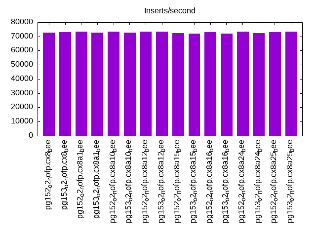

This is a report for the insert benchmark with 800M docs and 1 client(s). It is generated by scripts (bash, awk, sed) and Tufte might not be impressed. An overview of the insert benchmark is here and a short update is here. Below, by DBMS, I mean DBMS+version.config. An example is my8020.c10b40 where my means MySQL, 8020 is version 8.0.20 and c10b40 is the name for the configuration file.
The test server has 8 AMD cores, 16G RAM and an NVMe SSD. It is described here as the Beelink. The benchmark was run with 1 client and there were 1 or 3 connections per client (1 for queries or inserts without rate limits, 1+1 for rate limited inserts+deletes). It uses 1 table. It loads 800M rows per table without secondary indexes, creates secondary indexes, then inserts 20M rows per table with a delete per insert to avoid growing the table. It then does 3 read+write tests for 7200s each that do queries as fast as possible with 100, 500 and then 1000 inserts/second/client concurrent with the queries and 1000 deletes/second to avoid growing the table. The database is larger than memory. Clients and the DBMS share one server. The per-database configs are in the per-database subdirectories here.
The tested DBMS are:
The numbers are inserts/s for l.i0 and l.i1, indexed docs (or rows) /s for l.x and queries/s for q*.2. The values are the average rate over the entire test for inserts (IPS) and queries (QPS). The range of values for IPS and QPS is split into 3 parts: bottom 25%, middle 50%, top 25%. Values in the bottom 25% have a red background, values in the top 25% have a green background and values in the middle have no color. A gray background is used for values that can be ignored because the DBMS did not sustain the target insert rate. Red backgrounds are not used when the minimum value is within 80% of the max value.
| dbms | l.i0 | l.x | l.i1 | q100.1 | q500.1 | q1000.1 |
|---|---|---|---|---|---|---|
| pg152_o2_nofp.cx8_bee | 72641 | 199079 | 1518 | 7838 | 8029 | 7799 |
| pg153_o2_nofp.cx8_bee | 73006 | 199676 | 2215 | 7950 | 7879 | 7952 |
| pg152_o2_nofp.cx8a1_bee | 73536 | 193870 | 1559 | 7886 | 7898 | 7801 |
| pg153_o2_nofp.cx8a1_bee | 72641 | 194624 | 786 | 7741 | 7975 | 7687 |
| pg152_o2_nofp.cx8a10_bee | 73327 | 198536 | 2033 | 7829 | 7892 | 7790 |
| pg153_o2_nofp.cx8a10_bee | 72813 | 198536 | 1841 | 7991 | 7838 | 7764 |
| pg152_o2_nofp.cx8a12_bee | 73509 | 198783 | 1266 | 8021 | 7919 | 7796 |
| pg153_o2_nofp.cx8a12_bee | 73240 | 199825 | 689 | 7916 | 7885 | 7587 |
| pg152_o2_nofp.cx8a15_bee | 72320 | 198388 | 726 | 7903 | 7862 | 7745 |
| pg153_o2_nofp.cx8a15_bee | 71846 | 199875 | 750 | 7850 | 7798 | 7737 |
| pg152_o2_nofp.cx8a16_bee | 72886 | 197800 | 1738 | 7861 | 7910 | 7741 |
| pg153_o2_nofp.cx8a16_bee | 72124 | 200275 | 1591 | 7903 | 8116 | 7781 |
| pg152_o2_nofp.cx8a24_bee | 73361 | 200175 | 1928 | 7840 | 7834 | 7753 |
| pg153_o2_nofp.cx8a24_bee | 72294 | 199476 | 2242 | 7914 | 7824 | 7751 |
| pg152_o2_nofp.cx8a25_bee | 73173 | 198733 | 602 | 7658 | 7600 | 7403 |
| pg153_o2_nofp.cx8a25_bee | 73307 | 199278 | 2101 | 7780 | 7704 | 7466 |
This table has relative throughput, throughput for the DBMS relative to the DBMS in the first line, using the absolute throughput from the previous table. Values less than 0.95 have a yellow background. Values greater than 1.05 have a blue background.
| dbms | l.i0 | l.x | l.i1 | q100.1 | q500.1 | q1000.1 |
|---|---|---|---|---|---|---|
| pg152_o2_nofp.cx8_bee | 1.00 | 1.00 | 1.00 | 1.00 | 1.00 | 1.00 |
| pg153_o2_nofp.cx8_bee | 1.01 | 1.00 | 1.46 | 1.01 | 0.98 | 1.02 |
| pg152_o2_nofp.cx8a1_bee | 1.01 | 0.97 | 1.03 | 1.01 | 0.98 | 1.00 |
| pg153_o2_nofp.cx8a1_bee | 1.00 | 0.98 | 0.52 | 0.99 | 0.99 | 0.99 |
| pg152_o2_nofp.cx8a10_bee | 1.01 | 1.00 | 1.34 | 1.00 | 0.98 | 1.00 |
| pg153_o2_nofp.cx8a10_bee | 1.00 | 1.00 | 1.21 | 1.02 | 0.98 | 1.00 |
| pg152_o2_nofp.cx8a12_bee | 1.01 | 1.00 | 0.83 | 1.02 | 0.99 | 1.00 |
| pg153_o2_nofp.cx8a12_bee | 1.01 | 1.00 | 0.45 | 1.01 | 0.98 | 0.97 |
| pg152_o2_nofp.cx8a15_bee | 1.00 | 1.00 | 0.48 | 1.01 | 0.98 | 0.99 |
| pg153_o2_nofp.cx8a15_bee | 0.99 | 1.00 | 0.49 | 1.00 | 0.97 | 0.99 |
| pg152_o2_nofp.cx8a16_bee | 1.00 | 0.99 | 1.14 | 1.00 | 0.99 | 0.99 |
| pg153_o2_nofp.cx8a16_bee | 0.99 | 1.01 | 1.05 | 1.01 | 1.01 | 1.00 |
| pg152_o2_nofp.cx8a24_bee | 1.01 | 1.01 | 1.27 | 1.00 | 0.98 | 0.99 |
| pg153_o2_nofp.cx8a24_bee | 1.00 | 1.00 | 1.48 | 1.01 | 0.97 | 0.99 |
| pg152_o2_nofp.cx8a25_bee | 1.01 | 1.00 | 0.40 | 0.98 | 0.95 | 0.95 |
| pg153_o2_nofp.cx8a25_bee | 1.01 | 1.00 | 1.38 | 0.99 | 0.96 | 0.96 |
This lists the average rate of inserts/s for the tests that do inserts concurrent with queries. For such tests the query rate is listed in the table above. The read+write tests are setup so that the insert rate should match the target rate every second. Cells that are not at least 95% of the target have a red background to indicate a failure to satisfy the target.
| dbms | q100.1 | q500.1 | q1000.1 |
|---|---|---|---|
| pg152_o2_nofp.cx8_bee | 100 | 499 | 726 |
| pg153_o2_nofp.cx8_bee | 100 | 499 | 670 |
| pg152_o2_nofp.cx8a1_bee | 100 | 499 | 632 |
| pg153_o2_nofp.cx8a1_bee | 100 | 499 | 999 |
| pg152_o2_nofp.cx8a10_bee | 100 | 499 | 572 |
| pg153_o2_nofp.cx8a10_bee | 100 | 499 | 999 |
| pg152_o2_nofp.cx8a12_bee | 100 | 499 | 999 |
| pg153_o2_nofp.cx8a12_bee | 100 | 499 | 999 |
| pg152_o2_nofp.cx8a15_bee | 100 | 499 | 999 |
| pg153_o2_nofp.cx8a15_bee | 100 | 499 | 999 |
| pg152_o2_nofp.cx8a16_bee | 100 | 499 | 668 |
| pg153_o2_nofp.cx8a16_bee | 100 | 499 | 982 |
| pg152_o2_nofp.cx8a24_bee | 100 | 499 | 571 |
| pg153_o2_nofp.cx8a24_bee | 100 | 499 | 812 |
| pg152_o2_nofp.cx8a25_bee | 100 | 499 | 999 |
| pg153_o2_nofp.cx8a25_bee | 100 | 499 | 749 |
| target | 100 | 500 | 1000 |
l.i0: load without secondary indexes. Graphs for performance per 1-second interval are here.
Average throughput:
Insert response time histogram: each cell has the percentage of responses that take <= the time in the header and max is the max response time in seconds. For the max column values in the top 25% of the range have a red background and in the bottom 25% of the range have a green background. The red background is not used when the min value is within 80% of the max value.
| dbms | 256us | 1ms | 4ms | 16ms | 64ms | 256ms | 1s | 4s | 16s | gt | max |
|---|---|---|---|---|---|---|---|---|---|---|---|
| pg152_o2_nofp.cx8_bee | 99.999 | 0.001 | nonzero | 0.038 | |||||||
| pg153_o2_nofp.cx8_bee | 99.996 | 0.003 | 0.001 | 0.001 | nonzero | 0.367 | |||||
| pg152_o2_nofp.cx8a1_bee | 99.999 | 0.001 | nonzero | 0.056 | |||||||
| pg153_o2_nofp.cx8a1_bee | 99.999 | 0.001 | nonzero | 0.061 | |||||||
| pg152_o2_nofp.cx8a10_bee | 99.998 | 0.001 | 0.001 | 0.057 | |||||||
| pg153_o2_nofp.cx8a10_bee | 99.997 | 0.002 | 0.001 | nonzero | 0.066 | ||||||
| pg152_o2_nofp.cx8a12_bee | 99.999 | 0.001 | nonzero | 0.059 | |||||||
| pg153_o2_nofp.cx8a12_bee | 99.999 | 0.001 | nonzero | 0.056 | |||||||
| pg152_o2_nofp.cx8a15_bee | 99.997 | 0.002 | 0.001 | nonzero | 0.073 | ||||||
| pg153_o2_nofp.cx8a15_bee | 99.998 | 0.002 | nonzero | nonzero | 1.157 | ||||||
| pg152_o2_nofp.cx8a16_bee | 99.999 | 0.001 | nonzero | 0.060 | |||||||
| pg153_o2_nofp.cx8a16_bee | 99.998 | 0.001 | nonzero | 0.062 | |||||||
| pg152_o2_nofp.cx8a24_bee | 99.997 | 0.003 | 0.001 | nonzero | 0.097 | ||||||
| pg153_o2_nofp.cx8a24_bee | 99.997 | 0.002 | 0.001 | 0.057 | |||||||
| pg152_o2_nofp.cx8a25_bee | 99.998 | 0.001 | 0.001 | 0.053 | |||||||
| pg153_o2_nofp.cx8a25_bee | 99.998 | 0.001 | 0.001 | nonzero | 0.064 |
Performance metrics for the DBMS listed above. Some are normalized by throughput, others are not. Legend for results is here.
ips qps rps rmbps wps wmbps rpq rkbpq wpi wkbpi csps cpups cspq cpupq dbgb1 dbgb2 rss maxop p50 p99 tag 72641 0 33 0.4 114.8 32.0 0.000 0.006 0.002 0.451 8878 23.0 0.122 25 76.5 116.6 9.8 0.038 72717 71459 800m.pg152_o2_nofp.cx8_bee 73006 0 35 0.7 114.5 33.0 0.000 0.009 0.002 0.462 8903 23.1 0.122 25 76.5 116.6 9.2 0.367 73119 71817 800m.pg153_o2_nofp.cx8_bee 73536 0 34 0.5 114.9 32.0 0.000 0.007 0.002 0.446 8978 23.1 0.122 25 76.5 116.6 7.5 0.056 73552 72517 800m.pg152_o2_nofp.cx8a1_bee 72641 0 34 0.6 108.5 30.7 0.000 0.009 0.001 0.433 8869 23.1 0.122 25 76.5 116.6 0.2 0.061 72658 71556 800m.pg153_o2_nofp.cx8a1_bee 73327 0 34 0.5 115.6 32.5 0.000 0.007 0.002 0.454 8941 23.4 0.122 26 76.5 116.6 3.6 0.057 73417 72021 800m.pg152_o2_nofp.cx8a10_bee 72813 0 34 0.6 117.2 32.6 0.000 0.009 0.002 0.458 8897 23.1 0.122 25 76.5 116.6 0.1 0.066 72917 71421 800m.pg153_o2_nofp.cx8a10_bee 73509 0 34 0.5 117.8 33.0 0.000 0.007 0.002 0.459 8996 23.2 0.122 25 76.5 116.6 0.1 0.059 73521 72320 800m.pg152_o2_nofp.cx8a12_bee 73240 0 36 0.8 122.6 34.3 0.000 0.011 0.002 0.479 8991 23.3 0.123 25 76.5 116.6 2.2 0.056 73419 71421 800m.pg153_o2_nofp.cx8a12_bee 72320 0 32 0.4 123.1 34.1 0.000 0.006 0.002 0.482 8807 23.1 0.122 26 76.5 86.6 6.2 0.073 72417 70655 800m.pg152_o2_nofp.cx8a15_bee 71846 0 35 0.8 128.7 35.1 0.000 0.011 0.002 0.501 8756 23.1 0.122 26 76.5 86.6 10.1 1.157 71918 70421 800m.pg153_o2_nofp.cx8a15_bee 72886 0 31 0.2 104.9 30.0 0.000 0.003 0.001 0.422 8897 23.1 0.122 25 76.5 116.6 1.9 0.060 72952 71621 800m.pg152_o2_nofp.cx8a16_bee 72124 0 30 0.2 104.7 29.8 0.000 0.003 0.001 0.423 8802 23.0 0.122 26 76.5 116.6 0.7 0.062 72218 70921 800m.pg153_o2_nofp.cx8a16_bee 73361 0 36 0.8 120.7 34.0 0.000 0.011 0.002 0.475 8981 23.1 0.122 25 76.5 116.6 8.0 0.097 73418 72218 800m.pg152_o2_nofp.cx8a24_bee 72294 0 34 0.6 114.7 32.1 0.000 0.008 0.002 0.455 8818 23.0 0.122 25 76.5 116.6 0.1 0.057 72351 71219 800m.pg153_o2_nofp.cx8a24_bee 73173 0 68 2.9 134.6 35.0 0.001 0.041 0.002 0.489 9005 23.2 0.123 25 76.5 116.6 0.0 0.053 73219 72317 800m.pg152_o2_nofp.cx8a25_bee 73307 0 73 3.4 140.9 35.7 0.001 0.047 0.002 0.498 8995 23.2 0.123 25 76.5 116.6 0.0 0.064 73416 72320 800m.pg153_o2_nofp.cx8a25_bee
l.x: create secondary indexes.
Average throughput:
Performance metrics for the DBMS listed above. Some are normalized by throughput, others are not. Legend for results is here.
ips qps rps rmbps wps wmbps rpq rkbpq wpi wkbpi csps cpups cspq cpupq dbgb1 dbgb2 rss maxop p50 p99 tag 199079 0 586 71.9 196.6 69.6 0.003 0.370 0.001 0.358 436 12.5 0.002 5 147.0 187.1 10.2 0.008 NA NA 800m.pg152_o2_nofp.cx8_bee 199676 0 585 71.9 197.6 69.0 0.003 0.369 0.001 0.354 416 12.5 0.002 5 147.0 187.1 10.2 0.004 NA NA 800m.pg153_o2_nofp.cx8_bee 193870 0 572 70.2 174.4 61.7 0.003 0.371 0.001 0.326 409 12.5 0.002 5 147.0 187.1 10.2 0.007 NA NA 800m.pg152_o2_nofp.cx8a1_bee 194624 0 569 70.1 173.8 61.2 0.003 0.369 0.001 0.322 399 12.6 0.002 5 147.0 187.1 10.2 0.007 NA NA 800m.pg153_o2_nofp.cx8a1_bee 198536 0 583 71.7 199.8 69.6 0.003 0.370 0.001 0.359 408 12.5 0.002 5 147.0 187.1 10.2 0.007 NA NA 800m.pg152_o2_nofp.cx8a10_bee 198536 0 585 71.9 204.2 71.3 0.003 0.371 0.001 0.368 410 12.5 0.002 5 147.0 187.1 0.1 0.003 NA NA 800m.pg153_o2_nofp.cx8a10_bee 198783 0 587 72.0 205.5 71.4 0.003 0.371 0.001 0.368 397 12.5 0.002 5 147.0 187.1 10.3 0.005 NA NA 800m.pg152_o2_nofp.cx8a12_bee 199825 0 580 71.6 190.0 67.8 0.003 0.367 0.001 0.348 607 12.6 0.003 5 147.0 187.1 10.3 0.006 NA NA 800m.pg153_o2_nofp.cx8a12_bee 198388 0 584 71.8 200.9 72.2 0.003 0.371 0.001 0.372 419 12.5 0.002 5 147.0 157.1 10.2 0.005 NA NA 800m.pg152_o2_nofp.cx8a15_bee 199875 0 583 71.9 191.3 67.8 0.003 0.368 0.001 0.347 388 12.5 0.002 5 147.0 157.1 10.2 0.005 NA NA 800m.pg153_o2_nofp.cx8a15_bee 197800 0 580 71.3 192.6 67.7 0.003 0.369 0.001 0.350 396 12.5 0.002 5 147.0 187.1 10.2 0.005 NA NA 800m.pg152_o2_nofp.cx8a16_bee 200275 0 587 72.2 185.9 68.0 0.003 0.369 0.001 0.348 410 12.5 0.002 5 147.0 187.1 10.2 0.006 NA NA 800m.pg153_o2_nofp.cx8a16_bee 200175 0 583 71.9 187.5 68.4 0.003 0.368 0.001 0.350 423 12.4 0.002 5 147.0 187.1 10.2 0.007 NA NA 800m.pg152_o2_nofp.cx8a24_bee 199476 0 588 72.3 203.1 71.8 0.003 0.371 0.001 0.369 440 12.5 0.002 5 147.0 187.1 10.2 0.004 NA NA 800m.pg153_o2_nofp.cx8a24_bee 198733 0 679 74.9 174.9 70.8 0.003 0.386 0.001 0.365 407 12.5 0.002 5 147.0 187.1 2.6 0.004 NA NA 800m.pg152_o2_nofp.cx8a25_bee 199278 0 684 75.4 167.5 68.5 0.003 0.387 0.001 0.352 499 12.4 0.003 5 147.0 187.1 2.6 0.005 NA NA 800m.pg153_o2_nofp.cx8a25_bee
l.i1: continue load after secondary indexes created. Graphs for performance per 1-second interval are here.
Average throughput:
Insert response time histogram: each cell has the percentage of responses that take <= the time in the header and max is the max response time in seconds. For the max column values in the top 25% of the range have a red background and in the bottom 25% of the range have a green background. The red background is not used when the min value is within 80% of the max value.
| dbms | 256us | 1ms | 4ms | 16ms | 64ms | 256ms | 1s | 4s | 16s | gt | max |
|---|---|---|---|---|---|---|---|---|---|---|---|
| pg152_o2_nofp.cx8_bee | 89.611 | 10.387 | 0.002 | 0.107 | |||||||
| pg153_o2_nofp.cx8_bee | 90.252 | 9.746 | 0.002 | 0.086 | |||||||
| pg152_o2_nofp.cx8a1_bee | 82.241 | 17.758 | 0.002 | 0.093 | |||||||
| pg153_o2_nofp.cx8a1_bee | 75.893 | 24.106 | 0.001 | 0.131 | |||||||
| pg152_o2_nofp.cx8a10_bee | 90.490 | 9.507 | 0.003 | 0.090 | |||||||
| pg153_o2_nofp.cx8a10_bee | 83.027 | 16.922 | 0.052 | 0.173 | |||||||
| pg152_o2_nofp.cx8a12_bee | 82.630 | 17.320 | 0.050 | 0.189 | |||||||
| pg153_o2_nofp.cx8a12_bee | 85.877 | 14.122 | 0.001 | nonzero | 0.459 | ||||||
| pg152_o2_nofp.cx8a15_bee | 87.803 | 12.197 | 0.063 | ||||||||
| pg153_o2_nofp.cx8a15_bee | 86.757 | 13.242 | 0.060 | ||||||||
| pg152_o2_nofp.cx8a16_bee | 78.832 | 21.122 | 0.046 | 0.194 | |||||||
| pg153_o2_nofp.cx8a16_bee | 81.393 | 18.564 | 0.043 | 0.227 | |||||||
| pg152_o2_nofp.cx8a24_bee | 91.040 | 8.958 | 0.002 | 0.078 | |||||||
| pg153_o2_nofp.cx8a24_bee | 89.872 | 10.125 | 0.003 | 0.086 | |||||||
| pg152_o2_nofp.cx8a25_bee | 78.183 | 21.816 | 0.001 | 0.070 | |||||||
| pg153_o2_nofp.cx8a25_bee | 81.170 | 18.829 | 0.001 | 0.070 |
Delete response time histogram: each cell has the percentage of responses that take <= the time in the header and max is the max response time in seconds. For the max column values in the top 25% of the range have a red background and in the bottom 25% of the range have a green background. The red background is not used when the min value is within 80% of the max value.
| dbms | 256us | 1ms | 4ms | 16ms | 64ms | 256ms | 1s | 4s | 16s | gt | max |
|---|---|---|---|---|---|---|---|---|---|---|---|
| pg152_o2_nofp.cx8_bee | 0.002 | 54.091 | 1.005 | 5.582 | 20.642 | 18.678 | 0.114 | ||||
| pg153_o2_nofp.cx8_bee | 0.002 | 64.161 | 1.216 | 6.566 | 24.310 | 3.746 | 0.074 | ||||
| pg152_o2_nofp.cx8a1_bee | 0.002 | 55.255 | 1.079 | 5.520 | 20.691 | 17.453 | 0.109 | ||||
| pg153_o2_nofp.cx8a1_bee | 0.002 | 31.797 | 1.178 | 6.648 | 24.228 | 36.147 | nonzero | 0.334 | |||
| pg152_o2_nofp.cx8a10_bee | 0.001 | 64.334 | 1.103 | 5.491 | 20.680 | 8.391 | 0.088 | ||||
| pg153_o2_nofp.cx8a10_bee | 0.002 | 40.549 | 1.748 | 12.896 | 36.691 | 8.115 | 0.083 | ||||
| pg152_o2_nofp.cx8a12_bee | 0.003 | 34.977 | 1.532 | 10.585 | 28.525 | 24.378 | 0.126 | ||||
| pg153_o2_nofp.cx8a12_bee | 0.003 | 21.674 | 1.173 | 6.547 | 24.136 | 46.466 | nonzero | 0.339 | |||
| pg152_o2_nofp.cx8a15_bee | 0.001 | 25.231 | 1.065 | 5.412 | 20.698 | 47.593 | 0.179 | ||||
| pg153_o2_nofp.cx8a15_bee | 0.002 | 21.759 | 1.175 | 6.492 | 24.243 | 46.328 | nonzero | 0.298 | |||
| pg152_o2_nofp.cx8a16_bee | 0.001 | 59.761 | 1.111 | 5.544 | 20.599 | 12.985 | 0.099 | ||||
| pg153_o2_nofp.cx8a16_bee | 53.907 | 2.190 | 8.877 | 24.225 | 10.802 | 0.131 | |||||
| pg152_o2_nofp.cx8a24_bee | 0.002 | 62.253 | 1.004 | 5.554 | 20.858 | 10.329 | 0.092 | ||||
| pg153_o2_nofp.cx8a24_bee | 0.003 | 64.660 | 1.175 | 6.553 | 24.163 | 3.445 | 0.076 | ||||
| pg152_o2_nofp.cx8a25_bee | 0.002 | 25.051 | 0.999 | 5.947 | 21.674 | 46.326 | nonzero | 0.447 | |||
| pg153_o2_nofp.cx8a25_bee | 0.003 | 62.262 | 1.248 | 6.987 | 25.315 | 4.186 | 0.074 |
Performance metrics for the DBMS listed above. Some are normalized by throughput, others are not. Legend for results is here.
ips qps rps rmbps wps wmbps rpq rkbpq wpi wkbpi csps cpups cspq cpupq dbgb1 dbgb2 rss maxop p50 p99 tag 1518 0 2425 19.2 2800.9 39.4 1.598 12.986 1.846 26.592 5816 12.4 3.833 654 150.5 190.5 9.8 0.107 799 449 800m.pg152_o2_nofp.cx8_bee 2215 0 3542 28.1 4087.1 56.7 1.599 12.995 1.845 26.220 8385 11.7 3.785 423 150.5 190.5 9.8 0.086 1947 699 800m.pg153_o2_nofp.cx8_bee 1559 0 2487 19.8 2839.7 32.4 1.596 13.000 1.821 21.306 5910 12.4 3.791 636 150.5 190.5 10.1 0.093 849 449 800m.pg152_o2_nofp.cx8a1_bee 786 0 1262 10.1 1441.0 17.2 1.606 13.115 1.834 22.360 3081 13.0 3.921 1324 150.5 177.3 10.1 0.131 350 250 800m.pg153_o2_nofp.cx8a1_bee 2033 0 3248 25.8 3744.4 52.1 1.598 12.984 1.842 26.262 7707 11.7 3.790 460 150.5 190.5 9.7 0.090 1398 599 800m.pg152_o2_nofp.cx8a10_bee 1841 0 3017 32.4 3577.3 55.6 1.639 18.025 1.943 30.911 7149 13.5 3.884 587 149.5 189.6 3.4 0.173 1398 600 800m.pg153_o2_nofp.cx8a10_bee 1266 0 2077 22.4 2469.4 39.4 1.641 18.123 1.951 31.844 4995 13.5 3.947 853 149.6 189.6 3.8 0.189 699 400 800m.pg152_o2_nofp.cx8a12_bee 689 0 1106 8.8 1282.0 18.8 1.606 13.067 1.861 27.902 2849 13.2 4.137 1533 150.5 177.2 10.1 0.459 400 250 800m.pg153_o2_nofp.cx8a12_bee 726 0 1163 9.2 1411.8 23.1 1.601 13.005 1.944 32.617 2866 13.2 3.947 1454 150.5 160.5 10.1 0.063 400 300 800m.pg152_o2_nofp.cx8a15_bee 750 0 1205 9.6 1461.6 23.9 1.608 13.065 1.949 32.660 2963 13.3 3.952 1419 150.5 160.5 10.1 0.060 449 300 800m.pg153_o2_nofp.cx8a15_bee 1738 0 2859 30.5 3369.5 52.0 1.644 17.949 1.938 30.633 6799 12.3 3.911 566 150.4 190.4 0.9 0.194 1098 549 800m.pg152_o2_nofp.cx8a16_bee 1591 0 2615 27.6 3094.1 46.8 1.644 17.784 1.945 30.150 6223 12.6 3.912 634 149.7 189.7 3.3 0.227 999 399 800m.pg153_o2_nofp.cx8a16_bee 1928 0 3081 24.5 3548.7 49.7 1.598 12.987 1.841 26.422 7346 11.9 3.810 494 150.5 190.5 9.7 0.078 1199 549 800m.pg152_o2_nofp.cx8a24_bee 2242 0 3582 28.9 4133.0 59.6 1.598 13.183 1.843 27.237 8491 11.7 3.787 417 150.5 190.5 2.2 0.086 1997 699 800m.pg153_o2_nofp.cx8a24_bee 602 0 1108 9.6 1507.3 19.3 1.840 16.346 2.502 32.728 2567 12.8 4.261 1700 150.5 173.6 2.6 0.070 300 250 800m.pg152_o2_nofp.cx8a25_bee 2101 0 3834 33.4 4942.3 61.7 1.825 16.290 2.353 30.100 8431 11.3 4.014 430 150.5 190.5 2.5 0.070 1897 699 800m.pg153_o2_nofp.cx8a25_bee
q100.1: range queries with 100 insert/s per client. Graphs for performance per 1-second interval are here.
Average throughput:
Query response time histogram: each cell has the percentage of responses that take <= the time in the header and max is the max response time in seconds. For max values in the top 25% of the range have a red background and in the bottom 25% of the range have a green background. The red background is not used when the min value is within 80% of the max value.
| dbms | 256us | 1ms | 4ms | 16ms | 64ms | 256ms | 1s | 4s | 16s | gt | max |
|---|---|---|---|---|---|---|---|---|---|---|---|
| pg152_o2_nofp.cx8_bee | 99.773 | 0.225 | 0.001 | 0.002 | 0.016 | ||||||
| pg153_o2_nofp.cx8_bee | 99.765 | 0.232 | 0.001 | 0.002 | 0.014 | ||||||
| pg152_o2_nofp.cx8a1_bee | 99.783 | 0.215 | 0.001 | 0.002 | nonzero | 0.022 | |||||
| pg153_o2_nofp.cx8a1_bee | 99.775 | 0.223 | 0.001 | 0.002 | 0.016 | ||||||
| pg152_o2_nofp.cx8a10_bee | 99.775 | 0.223 | 0.001 | 0.002 | nonzero | 0.028 | |||||
| pg153_o2_nofp.cx8a10_bee | 99.781 | 0.216 | 0.002 | 0.001 | 0.016 | ||||||
| pg152_o2_nofp.cx8a12_bee | 99.781 | 0.217 | 0.001 | 0.001 | nonzero | 0.024 | |||||
| pg153_o2_nofp.cx8a12_bee | 99.768 | 0.230 | 0.001 | 0.002 | nonzero | 0.017 | |||||
| pg152_o2_nofp.cx8a15_bee | 99.769 | 0.229 | 0.001 | 0.002 | 0.015 | ||||||
| pg153_o2_nofp.cx8a15_bee | 99.764 | 0.234 | 0.001 | 0.001 | 0.016 | ||||||
| pg152_o2_nofp.cx8a16_bee | 99.773 | 0.225 | 0.001 | 0.001 | nonzero | 0.021 | |||||
| pg153_o2_nofp.cx8a16_bee | 99.788 | 0.209 | 0.001 | 0.002 | nonzero | 0.030 | |||||
| pg152_o2_nofp.cx8a24_bee | 99.781 | 0.217 | 0.001 | 0.001 | nonzero | 0.016 | |||||
| pg153_o2_nofp.cx8a24_bee | 99.773 | 0.225 | 0.001 | 0.001 | nonzero | 0.019 | |||||
| pg152_o2_nofp.cx8a25_bee | 99.744 | 0.253 | 0.001 | 0.002 | nonzero | 0.017 | |||||
| pg153_o2_nofp.cx8a25_bee | 99.747 | 0.250 | 0.001 | 0.002 | nonzero | 0.031 |
Insert response time histogram: each cell has the percentage of responses that take <= the time in the header and max is the max response time in seconds. For max values in the top 25% of the range have a red background and in the bottom 25% of the range have a green background. The red background is not used when the min value is within 80% of the max value.
| dbms | 256us | 1ms | 4ms | 16ms | 64ms | 256ms | 1s | 4s | 16s | gt | max |
|---|---|---|---|---|---|---|---|---|---|---|---|
| pg152_o2_nofp.cx8_bee | 63.632 | 36.368 | 0.054 | ||||||||
| pg153_o2_nofp.cx8_bee | 69.583 | 30.417 | 0.033 | ||||||||
| pg152_o2_nofp.cx8a1_bee | 55.750 | 44.250 | 0.035 | ||||||||
| pg153_o2_nofp.cx8a1_bee | 72.042 | 27.958 | 0.061 | ||||||||
| pg152_o2_nofp.cx8a10_bee | 67.931 | 32.069 | 0.032 | ||||||||
| pg153_o2_nofp.cx8a10_bee | 65.764 | 34.236 | 0.033 | ||||||||
| pg152_o2_nofp.cx8a12_bee | 69.840 | 30.160 | 0.032 | ||||||||
| pg153_o2_nofp.cx8a12_bee | 71.208 | 28.792 | 0.032 | ||||||||
| pg152_o2_nofp.cx8a15_bee | 68.938 | 31.062 | 0.030 | ||||||||
| pg153_o2_nofp.cx8a15_bee | 70.653 | 29.347 | 0.032 | ||||||||
| pg152_o2_nofp.cx8a16_bee | 68.181 | 31.819 | 0.031 | ||||||||
| pg153_o2_nofp.cx8a16_bee | 64.417 | 35.583 | 0.032 | ||||||||
| pg152_o2_nofp.cx8a24_bee | 71.056 | 28.944 | 0.046 | ||||||||
| pg153_o2_nofp.cx8a24_bee | 67.014 | 32.986 | 0.031 | ||||||||
| pg152_o2_nofp.cx8a25_bee | 83.562 | 16.438 | 0.028 | ||||||||
| pg153_o2_nofp.cx8a25_bee | 81.931 | 18.069 | 0.029 |
Delete response time histogram: each cell has the percentage of responses that take <= the time in the header and max is the max response time in seconds. For max values in the top 25% of the range have a red background and in the bottom 25% of the range have a green background. The red background is not used when the min value is within 80% of the max value.
| dbms | 256us | 1ms | 4ms | 16ms | 64ms | 256ms | 1s | 4s | 16s | gt | max |
|---|---|---|---|---|---|---|---|---|---|---|---|
| pg152_o2_nofp.cx8_bee | 0.542 | 98.194 | 0.160 | 1.104 | 0.007 | ||||||
| pg153_o2_nofp.cx8_bee | 0.514 | 98.910 | 0.104 | 0.472 | 0.007 | ||||||
| pg152_o2_nofp.cx8a1_bee | 0.222 | 98.229 | 0.139 | 1.410 | 0.009 | ||||||
| pg153_o2_nofp.cx8a1_bee | 6.194 | 33.181 | 60.625 | 0.014 | |||||||
| pg152_o2_nofp.cx8a10_bee | 0.444 | 98.889 | 0.056 | 0.611 | 0.010 | ||||||
| pg153_o2_nofp.cx8a10_bee | 0.444 | 98.354 | 0.181 | 1.021 | 0.009 | ||||||
| pg152_o2_nofp.cx8a12_bee | 0.660 | 98.778 | 0.056 | 0.507 | 0.007 | ||||||
| pg153_o2_nofp.cx8a12_bee | 0.507 | 99.028 | 0.083 | 0.382 | 0.015 | ||||||
| pg152_o2_nofp.cx8a15_bee | 0.500 | 99.069 | 0.069 | 0.361 | 0.010 | ||||||
| pg153_o2_nofp.cx8a15_bee | 0.875 | 97.694 | 0.167 | 1.264 | 0.007 | ||||||
| pg152_o2_nofp.cx8a16_bee | 0.576 | 98.861 | 0.069 | 0.493 | 0.007 | ||||||
| pg153_o2_nofp.cx8a16_bee | 7.028 | 31.889 | 61.083 | 0.014 | |||||||
| pg152_o2_nofp.cx8a24_bee | 0.306 | 98.819 | 0.146 | 0.729 | 0.007 | ||||||
| pg153_o2_nofp.cx8a24_bee | 0.618 | 98.472 | 0.069 | 0.840 | 0.007 | ||||||
| pg152_o2_nofp.cx8a25_bee | 0.292 | 56.701 | 29.542 | 13.465 | 0.011 | ||||||
| pg153_o2_nofp.cx8a25_bee | 0.396 | 99.507 | 0.049 | 0.049 | 0.010 |
Performance metrics for the DBMS listed above. Some are normalized by throughput, others are not. Legend for results is here.
ips qps rps rmbps wps wmbps rpq rkbpq wpi wkbpi csps cpups cspq cpupq dbgb1 dbgb2 rss maxop p50 p99 tag 100 7838 180 1.5 204.1 3.4 0.023 0.190 2.045 35.169 30590 13.0 3.903 133 150.5 186.6 10.1 0.016 7496 6998 800m.pg152_o2_nofp.cx8_bee 100 7950 180 1.5 205.7 3.4 0.023 0.187 2.061 35.136 31013 13.3 3.901 134 150.5 187.4 10.1 0.014 7527 6919 800m.pg153_o2_nofp.cx8_bee 100 7886 180 1.5 197.7 2.8 0.023 0.189 1.981 28.972 30764 13.0 3.901 132 150.5 186.6 10.1 0.022 7527 7062 800m.pg152_o2_nofp.cx8a1_bee 100 7741 181 1.5 210.5 2.9 0.023 0.193 2.109 29.952 30215 13.0 3.903 134 150.5 186.2 10.1 0.016 7463 6823 800m.pg153_o2_nofp.cx8a1_bee 100 7829 180 1.5 204.8 3.4 0.023 0.190 2.052 35.182 30552 13.1 3.903 134 150.5 186.9 10.1 0.028 7511 6918 800m.pg152_o2_nofp.cx8a10_bee 100 7991 180 1.4 242.8 3.8 0.022 0.185 2.432 38.534 31180 13.1 3.902 131 149.6 184.9 10.1 0.016 7639 6952 800m.pg153_o2_nofp.cx8a10_bee 100 8021 180 1.5 207.7 3.5 0.023 0.186 2.081 35.435 31283 13.2 3.900 132 149.6 186.4 10.1 0.024 7671 7110 800m.pg152_o2_nofp.cx8a12_bee 100 7916 181 1.5 197.2 3.4 0.023 0.188 1.976 35.102 30886 13.2 3.902 133 150.5 184.8 10.2 0.017 7527 6983 800m.pg153_o2_nofp.cx8a12_bee 100 7903 180 1.5 206.0 3.5 0.023 0.188 2.064 35.886 30836 13.3 3.902 135 150.5 160.5 10.1 0.015 7511 7052 800m.pg152_o2_nofp.cx8a15_bee 100 7850 180 1.5 211.1 3.5 0.023 0.189 2.115 36.209 30637 13.1 3.903 133 150.5 160.5 10.1 0.016 7478 6919 800m.pg153_o2_nofp.cx8a15_bee 100 7861 180 1.5 206.6 3.4 0.023 0.189 2.071 35.167 30673 13.1 3.902 133 150.4 187.2 10.1 0.021 7525 6920 800m.pg152_o2_nofp.cx8a16_bee 100 7903 181 1.5 213.0 3.5 0.023 0.188 2.135 36.385 30832 13.1 3.901 133 149.7 183.7 10.1 0.030 7590 7032 800m.pg153_o2_nofp.cx8a16_bee 100 7840 180 1.5 211.0 3.5 0.023 0.190 2.114 35.805 30605 12.9 3.904 132 150.5 187.4 10.1 0.016 7511 6952 800m.pg152_o2_nofp.cx8a24_bee 100 7914 180 1.5 204.5 3.4 0.023 0.188 2.050 35.159 30885 13.3 3.903 134 150.5 186.8 10.1 0.019 7527 7078 800m.pg153_o2_nofp.cx8a24_bee 100 7658 204 1.7 387.5 4.8 0.027 0.229 3.882 48.940 29973 13.1 3.914 137 150.5 187.5 2.5 0.017 7327 6647 800m.pg152_o2_nofp.cx8a25_bee 100 7780 204 1.7 388.2 4.8 0.026 0.227 3.890 49.023 30434 13.3 3.912 137 150.5 185.7 2.5 0.031 7432 6854 800m.pg153_o2_nofp.cx8a25_bee
q500.1: range queries with 500 insert/s per client. Graphs for performance per 1-second interval are here.
Average throughput:
Query response time histogram: each cell has the percentage of responses that take <= the time in the header and max is the max response time in seconds. For max values in the top 25% of the range have a red background and in the bottom 25% of the range have a green background. The red background is not used when the min value is within 80% of the max value.
| dbms | 256us | 1ms | 4ms | 16ms | 64ms | 256ms | 1s | 4s | 16s | gt | max |
|---|---|---|---|---|---|---|---|---|---|---|---|
| pg152_o2_nofp.cx8_bee | 99.882 | 0.113 | 0.001 | 0.004 | 0.015 | ||||||
| pg153_o2_nofp.cx8_bee | 99.901 | 0.094 | 0.001 | 0.004 | 0.016 | ||||||
| pg152_o2_nofp.cx8a1_bee | 99.877 | 0.118 | 0.001 | 0.004 | 0.016 | ||||||
| pg153_o2_nofp.cx8a1_bee | 99.876 | 0.119 | 0.001 | 0.004 | 0.015 | ||||||
| pg152_o2_nofp.cx8a10_bee | 99.893 | 0.102 | 0.001 | 0.004 | nonzero | 0.016 | |||||
| pg153_o2_nofp.cx8a10_bee | 99.905 | 0.090 | 0.001 | 0.004 | 0.016 | ||||||
| pg152_o2_nofp.cx8a12_bee | 99.903 | 0.092 | 0.001 | 0.004 | 0.016 | ||||||
| pg153_o2_nofp.cx8a12_bee | 99.898 | 0.097 | 0.001 | 0.004 | 0.016 | ||||||
| pg152_o2_nofp.cx8a15_bee | 99.891 | 0.101 | 0.001 | 0.007 | 0.016 | ||||||
| pg153_o2_nofp.cx8a15_bee | 99.896 | 0.096 | 0.001 | 0.007 | 0.016 | ||||||
| pg152_o2_nofp.cx8a16_bee | 99.890 | 0.105 | 0.001 | 0.004 | 0.016 | ||||||
| pg153_o2_nofp.cx8a16_bee | 99.886 | 0.108 | 0.001 | 0.004 | 0.016 | ||||||
| pg152_o2_nofp.cx8a24_bee | 99.890 | 0.104 | 0.001 | 0.005 | 0.016 | ||||||
| pg153_o2_nofp.cx8a24_bee | 99.904 | 0.091 | 0.001 | 0.004 | 0.016 | ||||||
| pg152_o2_nofp.cx8a25_bee | 99.860 | 0.140 | 0.001 | nonzero | nonzero | 0.022 | |||||
| pg153_o2_nofp.cx8a25_bee | 99.861 | 0.138 | 0.001 | nonzero | nonzero | 0.023 |
Insert response time histogram: each cell has the percentage of responses that take <= the time in the header and max is the max response time in seconds. For max values in the top 25% of the range have a red background and in the bottom 25% of the range have a green background. The red background is not used when the min value is within 80% of the max value.
| dbms | 256us | 1ms | 4ms | 16ms | 64ms | 256ms | 1s | 4s | 16s | gt | max |
|---|---|---|---|---|---|---|---|---|---|---|---|
| pg152_o2_nofp.cx8_bee | 94.121 | 5.879 | 0.029 | ||||||||
| pg153_o2_nofp.cx8_bee | 94.415 | 5.585 | 0.029 | ||||||||
| pg152_o2_nofp.cx8a1_bee | 93.358 | 6.642 | 0.030 | ||||||||
| pg153_o2_nofp.cx8a1_bee | 92.267 | 7.733 | 0.032 | ||||||||
| pg152_o2_nofp.cx8a10_bee | 94.328 | 5.672 | 0.028 | ||||||||
| pg153_o2_nofp.cx8a10_bee | 93.721 | 6.279 | 0.029 | ||||||||
| pg152_o2_nofp.cx8a12_bee | 93.561 | 6.439 | 0.030 | ||||||||
| pg153_o2_nofp.cx8a12_bee | 94.015 | 5.985 | 0.030 | ||||||||
| pg152_o2_nofp.cx8a15_bee | 94.114 | 5.886 | 0.029 | ||||||||
| pg153_o2_nofp.cx8a15_bee | 93.568 | 6.432 | 0.030 | ||||||||
| pg152_o2_nofp.cx8a16_bee | 94.037 | 5.962 | 0.030 | ||||||||
| pg153_o2_nofp.cx8a16_bee | 93.332 | 6.668 | 0.030 | ||||||||
| pg152_o2_nofp.cx8a24_bee | 94.517 | 5.483 | 0.029 | ||||||||
| pg153_o2_nofp.cx8a24_bee | 94.808 | 5.192 | 0.028 | ||||||||
| pg152_o2_nofp.cx8a25_bee | 95.874 | 4.126 | 0.057 | ||||||||
| pg153_o2_nofp.cx8a25_bee | 96.253 | 3.747 | 0.054 |
Delete response time histogram: each cell has the percentage of responses that take <= the time in the header and max is the max response time in seconds. For max values in the top 25% of the range have a red background and in the bottom 25% of the range have a green background. The red background is not used when the min value is within 80% of the max value.
| dbms | 256us | 1ms | 4ms | 16ms | 64ms | 256ms | 1s | 4s | 16s | gt | max |
|---|---|---|---|---|---|---|---|---|---|---|---|
| pg152_o2_nofp.cx8_bee | 0.056 | 2.637 | 0.001 | 14.699 | 82.607 | 0.054 | |||||
| pg153_o2_nofp.cx8_bee | 3.811 | 94.546 | 0.083 | 0.192 | 1.368 | 0.056 | |||||
| pg152_o2_nofp.cx8a1_bee | 1.204 | 37.611 | 0.008 | 0.036 | 61.140 | 0.053 | |||||
| pg153_o2_nofp.cx8a1_bee | 0.471 | 13.549 | 0.017 | 25.329 | 60.635 | 0.042 | |||||
| pg152_o2_nofp.cx8a10_bee | 4.019 | 78.814 | 0.065 | 0.154 | 16.947 | 0.052 | |||||
| pg153_o2_nofp.cx8a10_bee | 4.160 | 95.569 | 0.076 | 0.194 | 0.008 | ||||||
| pg152_o2_nofp.cx8a12_bee | 4.414 | 95.333 | 0.081 | 0.172 | 0.009 | ||||||
| pg153_o2_nofp.cx8a12_bee | 4.032 | 95.701 | 0.092 | 0.175 | 0.010 | ||||||
| pg152_o2_nofp.cx8a15_bee | 4.331 | 95.349 | 0.076 | 0.244 | 0.009 | ||||||
| pg153_o2_nofp.cx8a15_bee | 4.343 | 95.335 | 0.068 | 0.254 | 0.009 | ||||||
| pg152_o2_nofp.cx8a16_bee | 2.831 | 61.347 | 0.053 | 0.114 | 35.656 | 0.053 | |||||
| pg153_o2_nofp.cx8a16_bee | 23.212 | 76.787 | 0.047 | ||||||||
| pg152_o2_nofp.cx8a24_bee | 3.443 | 78.768 | 0.071 | 0.157 | 17.561 | 0.052 | |||||
| pg153_o2_nofp.cx8a24_bee | 4.179 | 95.582 | 0.079 | 0.160 | 0.008 | ||||||
| pg152_o2_nofp.cx8a25_bee | 4.554 | 95.397 | 0.037 | 0.011 | 0.007 | ||||||
| pg153_o2_nofp.cx8a25_bee | 3.762 | 96.176 | 0.047 | 0.014 | 0.007 |
Performance metrics for the DBMS listed above. Some are normalized by throughput, others are not. Legend for results is here.
ips qps rps rmbps wps wmbps rpq rkbpq wpi wkbpi csps cpups cspq cpupq dbgb1 dbgb2 rss maxop p50 p99 tag 499 8029 807 6.4 963.2 14.6 0.101 0.821 1.929 29.890 32753 17.5 4.079 174 150.6 180.9 10.1 0.015 7543 7256 800m.pg152_o2_nofp.cx8_bee 499 7879 807 6.5 964.7 14.6 0.102 0.840 1.932 29.905 32173 14.0 4.084 142 150.6 181.3 10.1 0.016 7528 7319 800m.pg153_o2_nofp.cx8_bee 499 7898 808 6.5 957.2 12.2 0.102 0.836 1.917 24.981 32232 16.9 4.081 171 150.6 177.0 10.0 0.016 7448 7192 800m.pg152_o2_nofp.cx8a1_bee 499 7975 804 6.4 949.4 12.1 0.101 0.824 1.901 24.839 32529 16.5 4.079 166 150.6 178.3 10.1 0.015 7511 7244 800m.pg153_o2_nofp.cx8a1_bee 499 7892 807 6.5 962.5 14.6 0.102 0.838 1.928 29.891 32223 14.8 4.083 150 150.6 181.1 10.1 0.016 7479 7239 800m.pg152_o2_nofp.cx8a10_bee 499 7838 804 6.4 966.3 14.6 0.103 0.837 1.935 30.038 32007 13.9 4.084 142 149.9 179.8 10.1 0.016 7510 7255 800m.pg153_o2_nofp.cx8a10_bee 499 7919 804 6.4 967.2 14.6 0.102 0.829 1.937 30.027 32315 13.9 4.081 140 149.9 180.6 10.1 0.016 7559 7319 800m.pg152_o2_nofp.cx8a12_bee 499 7885 803 6.4 967.3 14.6 0.102 0.831 1.937 29.906 32196 14.0 4.083 142 150.6 180.0 10.1 0.016 7515 7287 800m.pg153_o2_nofp.cx8a12_bee 499 7862 803 6.4 1060.0 17.0 0.102 0.833 2.123 34.797 32211 13.9 4.097 141 150.6 160.7 10.1 0.016 7525 7239 800m.pg152_o2_nofp.cx8a15_bee 499 7798 802 6.4 1058.2 17.0 0.103 0.840 2.119 34.816 31960 14.0 4.098 144 150.6 160.7 10.1 0.016 7463 7192 800m.pg153_o2_nofp.cx8a15_bee 499 7910 809 6.5 963.3 14.6 0.102 0.837 1.929 29.855 32292 15.7 4.082 159 150.4 181.1 10.1 0.016 7463 7223 800m.pg152_o2_nofp.cx8a16_bee 499 8116 805 6.4 977.6 14.7 0.099 0.809 1.958 30.132 33090 17.1 4.077 169 150.0 179.3 10.1 0.016 7623 7318 800m.pg153_o2_nofp.cx8a16_bee 499 7834 808 6.5 956.2 14.5 0.103 0.844 1.915 29.671 32005 14.9 4.085 152 150.6 181.1 10.1 0.016 7447 7224 800m.pg152_o2_nofp.cx8a24_bee 499 7824 803 6.4 962.1 14.6 0.103 0.837 1.927 29.847 31973 14.0 4.086 143 150.6 181.0 10.1 0.016 7479 7271 800m.pg153_o2_nofp.cx8a24_bee 499 7600 910 8.1 1660.0 19.7 0.120 1.087 3.325 40.403 31239 13.8 4.110 145 150.6 181.3 2.5 0.022 7238 7063 800m.pg152_o2_nofp.cx8a25_bee 499 7704 909 8.1 1661.6 19.7 0.118 1.071 3.328 40.452 31632 14.1 4.106 146 150.6 180.5 2.5 0.023 7304 7143 800m.pg153_o2_nofp.cx8a25_bee
q1000.1: range queries with 1000 insert/s per client. Graphs for performance per 1-second interval are here.
Average throughput:
Query response time histogram: each cell has the percentage of responses that take <= the time in the header and max is the max response time in seconds. For max values in the top 25% of the range have a red background and in the bottom 25% of the range have a green background. The red background is not used when the min value is within 80% of the max value.
| dbms | 256us | 1ms | 4ms | 16ms | 64ms | 256ms | 1s | 4s | 16s | gt | max |
|---|---|---|---|---|---|---|---|---|---|---|---|
| pg152_o2_nofp.cx8_bee | 99.891 | 0.106 | 0.001 | 0.002 | nonzero | 0.016 | |||||
| pg153_o2_nofp.cx8_bee | 99.894 | 0.105 | 0.001 | nonzero | 0.016 | ||||||
| pg152_o2_nofp.cx8a1_bee | 99.897 | 0.101 | 0.001 | 0.001 | nonzero | 0.016 | |||||
| pg153_o2_nofp.cx8a1_bee | 99.839 | 0.153 | 0.002 | 0.007 | 0.015 | ||||||
| pg152_o2_nofp.cx8a10_bee | 99.907 | 0.092 | 0.001 | nonzero | 0.012 | ||||||
| pg153_o2_nofp.cx8a10_bee | 99.837 | 0.151 | 0.002 | 0.011 | 0.016 | ||||||
| pg152_o2_nofp.cx8a12_bee | 99.838 | 0.149 | 0.002 | 0.011 | 0.016 | ||||||
| pg153_o2_nofp.cx8a12_bee | 99.828 | 0.159 | 0.002 | 0.011 | 0.016 | ||||||
| pg152_o2_nofp.cx8a15_bee | 99.822 | 0.169 | 0.002 | 0.007 | 0.016 | ||||||
| pg153_o2_nofp.cx8a15_bee | 99.826 | 0.165 | 0.002 | 0.006 | 0.016 | ||||||
| pg152_o2_nofp.cx8a16_bee | 99.905 | 0.093 | 0.001 | 0.001 | 0.016 | ||||||
| pg153_o2_nofp.cx8a16_bee | 99.846 | 0.145 | 0.002 | 0.008 | nonzero | 0.016 | |||||
| pg152_o2_nofp.cx8a24_bee | 99.908 | 0.091 | 0.001 | nonzero | nonzero | 0.028 | |||||
| pg153_o2_nofp.cx8a24_bee | 99.863 | 0.129 | 0.001 | 0.006 | 0.016 | ||||||
| pg152_o2_nofp.cx8a25_bee | 99.676 | 0.321 | 0.003 | nonzero | nonzero | 0.027 | |||||
| pg153_o2_nofp.cx8a25_bee | 99.799 | 0.200 | 0.001 | nonzero | nonzero | 0.029 |
Insert response time histogram: each cell has the percentage of responses that take <= the time in the header and max is the max response time in seconds. For max values in the top 25% of the range have a red background and in the bottom 25% of the range have a green background. The red background is not used when the min value is within 80% of the max value.
| dbms | 256us | 1ms | 4ms | 16ms | 64ms | 256ms | 1s | 4s | 16s | gt | max |
|---|---|---|---|---|---|---|---|---|---|---|---|
| pg152_o2_nofp.cx8_bee | 95.482 | 4.518 | 0.054 | ||||||||
| pg153_o2_nofp.cx8_bee | 94.631 | 5.369 | 0.052 | ||||||||
| pg152_o2_nofp.cx8a1_bee | 82.174 | 17.826 | 0.048 | ||||||||
| pg153_o2_nofp.cx8a1_bee | 97.237 | 2.763 | 0.028 | ||||||||
| pg152_o2_nofp.cx8a10_bee | 92.310 | 7.690 | 0.059 | ||||||||
| pg153_o2_nofp.cx8a10_bee | 97.785 | 2.215 | 0.027 | ||||||||
| pg152_o2_nofp.cx8a12_bee | 97.737 | 2.262 | 0.040 | ||||||||
| pg153_o2_nofp.cx8a12_bee | 97.747 | 2.253 | 0.027 | ||||||||
| pg152_o2_nofp.cx8a15_bee | 97.056 | 2.944 | 0.027 | ||||||||
| pg153_o2_nofp.cx8a15_bee | 97.092 | 2.908 | 0.030 | ||||||||
| pg152_o2_nofp.cx8a16_bee | 93.973 | 6.027 | 0.053 | ||||||||
| pg153_o2_nofp.cx8a16_bee | 96.856 | 3.144 | 0.045 | ||||||||
| pg152_o2_nofp.cx8a24_bee | 91.292 | 8.708 | 0.001 | 0.069 | |||||||
| pg153_o2_nofp.cx8a24_bee | 97.923 | 2.077 | 0.052 | ||||||||
| pg152_o2_nofp.cx8a25_bee | 81.675 | 18.324 | 0.001 | 0.066 | |||||||
| pg153_o2_nofp.cx8a25_bee | 91.291 | 8.707 | 0.002 | 0.098 |
Delete response time histogram: each cell has the percentage of responses that take <= the time in the header and max is the max response time in seconds. For max values in the top 25% of the range have a red background and in the bottom 25% of the range have a green background. The red background is not used when the min value is within 80% of the max value.
| dbms | 256us | 1ms | 4ms | 16ms | 64ms | 256ms | 1s | 4s | 16s | gt | max |
|---|---|---|---|---|---|---|---|---|---|---|---|
| pg152_o2_nofp.cx8_bee | 0.741 | 29.516 | 0.029 | 0.076 | 18.821 | 50.817 | 0.112 | ||||
| pg153_o2_nofp.cx8_bee | 35.906 | 64.094 | 0.112 | ||||||||
| pg152_o2_nofp.cx8a1_bee | 0.319 | 13.047 | 0.012 | 0.024 | 19.329 | 67.270 | 0.124 | ||||
| pg153_o2_nofp.cx8a1_bee | 1.743 | 98.126 | 0.074 | 0.057 | 0.010 | ||||||
| pg152_o2_nofp.cx8a10_bee | 21.285 | 78.715 | 0.142 | ||||||||
| pg153_o2_nofp.cx8a10_bee | 2.857 | 96.975 | 0.093 | 0.075 | 0.009 | ||||||
| pg152_o2_nofp.cx8a12_bee | 3.008 | 96.836 | 0.072 | 0.084 | 0.009 | ||||||
| pg153_o2_nofp.cx8a12_bee | 2.310 | 97.528 | 0.088 | 0.074 | 0.009 | ||||||
| pg152_o2_nofp.cx8a15_bee | 2.556 | 97.133 | 0.085 | 0.226 | 0.011 | ||||||
| pg153_o2_nofp.cx8a15_bee | 2.676 | 97.001 | 0.085 | 0.238 | 0.010 | ||||||
| pg152_o2_nofp.cx8a16_bee | 0.358 | 18.567 | 0.023 | 0.044 | 20.244 | 60.764 | 0.118 | ||||
| pg153_o2_nofp.cx8a16_bee | 1.935 | 71.482 | 0.056 | 0.074 | 26.451 | 0.001 | 0.117 | ||||
| pg152_o2_nofp.cx8a24_bee | 20.985 | 79.015 | 0.133 | ||||||||
| pg153_o2_nofp.cx8a24_bee | 2.083 | 69.303 | 0.053 | 0.047 | 0.079 | 28.434 | 0.183 | ||||
| pg152_o2_nofp.cx8a25_bee | 2.167 | 97.776 | 0.035 | 0.021 | 0.007 | ||||||
| pg153_o2_nofp.cx8a25_bee | 0.737 | 35.268 | 0.017 | 0.006 | 13.375 | 50.597 | 0.218 |
Performance metrics for the DBMS listed above. Some are normalized by throughput, others are not. Legend for results is here.
ips qps rps rmbps wps wmbps rpq rkbpq wpi wkbpi csps cpups cspq cpupq dbgb1 dbgb2 rss maxop p50 p99 tag 726 7799 1183 9.4 1437.6 21.0 0.152 1.239 1.979 29.668 32824 24.3 4.209 249 151.3 185.3 9.9 0.016 7479 7198 800m.pg152_o2_nofp.cx8_bee 670 7952 1093 8.7 1331.5 19.7 0.137 1.122 1.987 30.056 33191 26.8 4.174 270 151.3 185.8 9.9 0.016 7543 7384 800m.pg153_o2_nofp.cx8_bee 632 7801 1030 8.2 1241.0 15.4 0.132 1.080 1.964 24.918 32446 25.8 4.159 265 151.3 174.2 9.9 0.016 7463 7240 800m.pg152_o2_nofp.cx8a1_bee 999 7687 1622 13.0 1927.0 23.0 0.211 1.727 1.930 23.566 33336 15.3 4.336 159 151.3 177.4 9.9 0.015 7371 7080 800m.pg153_o2_nofp.cx8a1_bee 572 7790 932 7.4 1147.4 17.0 0.120 0.977 2.007 30.463 32210 26.7 4.135 274 151.3 183.4 9.9 0.012 7431 7288 800m.pg152_o2_nofp.cx8a10_bee 999 7764 1622 13.0 1943.8 28.4 0.209 1.708 1.947 29.159 33631 15.2 4.331 157 150.5 189.7 9.9 0.016 7463 7128 800m.pg153_o2_nofp.cx8a10_bee 999 7796 1622 12.9 1945.4 28.3 0.208 1.700 1.948 29.068 33747 15.2 4.329 156 150.5 189.7 9.9 0.016 7496 7196 800m.pg152_o2_nofp.cx8a12_bee 999 7587 1622 12.9 1950.0 28.5 0.214 1.747 1.953 29.221 32995 15.1 4.349 159 151.3 190.5 9.9 0.016 7288 6968 800m.pg153_o2_nofp.cx8a12_bee 999 7745 1622 12.9 2195.1 35.3 0.209 1.710 2.198 36.160 33882 15.4 4.375 159 151.3 161.3 9.9 0.016 7420 7080 800m.pg152_o2_nofp.cx8a15_bee 999 7737 1622 12.9 2197.1 35.3 0.210 1.712 2.200 36.180 33847 15.5 4.375 160 151.3 161.3 9.9 0.016 7388 7048 800m.pg153_o2_nofp.cx8a15_bee 668 7741 1089 8.7 1326.3 19.4 0.141 1.151 1.984 29.776 32353 25.2 4.179 260 150.9 183.0 9.9 0.016 7431 7206 800m.pg152_o2_nofp.cx8a16_bee 982 7781 1596 12.7 1910.6 28.1 0.205 1.676 1.945 29.298 33692 18.5 4.330 190 150.6 189.9 9.9 0.016 7447 7099 800m.pg153_o2_nofp.cx8a16_bee 571 7753 930 7.4 1145.5 16.9 0.120 0.980 2.006 30.379 32055 26.7 4.135 276 151.3 182.7 9.9 0.028 7416 7272 800m.pg152_o2_nofp.cx8a24_bee 812 7751 1326 10.6 1603.4 23.7 0.171 1.404 1.975 29.856 32945 20.1 4.250 207 151.3 190.3 9.9 0.016 7447 7144 800m.pg153_o2_nofp.cx8a24_bee 999 7403 1850 16.7 3253.8 38.4 0.250 2.303 3.258 39.345 32498 15.4 4.390 166 151.3 190.5 2.5 0.027 7032 6809 800m.pg152_o2_nofp.cx8a25_bee 749 7466 1386 12.5 2545.9 29.8 0.186 1.715 3.401 40.762 31758 23.9 4.253 256 151.3 187.8 2.5 0.029 7128 6952 800m.pg153_o2_nofp.cx8a25_bee
l.i0: load without secondary indexes
Performance metrics for all DBMS, not just the ones listed above. Some are normalized by throughput, others are not. Legend for results is here.
ips qps rps rmbps wps wmbps rpq rkbpq wpi wkbpi csps cpups cspq cpupq dbgb1 dbgb2 rss maxop p50 p99 tag 72641 0 33 0.4 114.8 32.0 0.000 0.006 0.002 0.451 8878 23.0 0.122 25 76.5 116.6 9.8 0.038 72717 71459 800m.pg152_o2_nofp.cx8_bee 73006 0 35 0.7 114.5 33.0 0.000 0.009 0.002 0.462 8903 23.1 0.122 25 76.5 116.6 9.2 0.367 73119 71817 800m.pg153_o2_nofp.cx8_bee 73536 0 34 0.5 114.9 32.0 0.000 0.007 0.002 0.446 8978 23.1 0.122 25 76.5 116.6 7.5 0.056 73552 72517 800m.pg152_o2_nofp.cx8a1_bee 72641 0 34 0.6 108.5 30.7 0.000 0.009 0.001 0.433 8869 23.1 0.122 25 76.5 116.6 0.2 0.061 72658 71556 800m.pg153_o2_nofp.cx8a1_bee 73327 0 34 0.5 115.6 32.5 0.000 0.007 0.002 0.454 8941 23.4 0.122 26 76.5 116.6 3.6 0.057 73417 72021 800m.pg152_o2_nofp.cx8a10_bee 72813 0 34 0.6 117.2 32.6 0.000 0.009 0.002 0.458 8897 23.1 0.122 25 76.5 116.6 0.1 0.066 72917 71421 800m.pg153_o2_nofp.cx8a10_bee 73509 0 34 0.5 117.8 33.0 0.000 0.007 0.002 0.459 8996 23.2 0.122 25 76.5 116.6 0.1 0.059 73521 72320 800m.pg152_o2_nofp.cx8a12_bee 73240 0 36 0.8 122.6 34.3 0.000 0.011 0.002 0.479 8991 23.3 0.123 25 76.5 116.6 2.2 0.056 73419 71421 800m.pg153_o2_nofp.cx8a12_bee 72320 0 32 0.4 123.1 34.1 0.000 0.006 0.002 0.482 8807 23.1 0.122 26 76.5 86.6 6.2 0.073 72417 70655 800m.pg152_o2_nofp.cx8a15_bee 71846 0 35 0.8 128.7 35.1 0.000 0.011 0.002 0.501 8756 23.1 0.122 26 76.5 86.6 10.1 1.157 71918 70421 800m.pg153_o2_nofp.cx8a15_bee 72886 0 31 0.2 104.9 30.0 0.000 0.003 0.001 0.422 8897 23.1 0.122 25 76.5 116.6 1.9 0.060 72952 71621 800m.pg152_o2_nofp.cx8a16_bee 72124 0 30 0.2 104.7 29.8 0.000 0.003 0.001 0.423 8802 23.0 0.122 26 76.5 116.6 0.7 0.062 72218 70921 800m.pg153_o2_nofp.cx8a16_bee 73361 0 36 0.8 120.7 34.0 0.000 0.011 0.002 0.475 8981 23.1 0.122 25 76.5 116.6 8.0 0.097 73418 72218 800m.pg152_o2_nofp.cx8a24_bee 72294 0 34 0.6 114.7 32.1 0.000 0.008 0.002 0.455 8818 23.0 0.122 25 76.5 116.6 0.1 0.057 72351 71219 800m.pg153_o2_nofp.cx8a24_bee 73173 0 68 2.9 134.6 35.0 0.001 0.041 0.002 0.489 9005 23.2 0.123 25 76.5 116.6 0.0 0.053 73219 72317 800m.pg152_o2_nofp.cx8a25_bee 73307 0 73 3.4 140.9 35.7 0.001 0.047 0.002 0.498 8995 23.2 0.123 25 76.5 116.6 0.0 0.064 73416 72320 800m.pg153_o2_nofp.cx8a25_bee
l.x: create secondary indexes
Performance metrics for all DBMS, not just the ones listed above. Some are normalized by throughput, others are not. Legend for results is here.
ips qps rps rmbps wps wmbps rpq rkbpq wpi wkbpi csps cpups cspq cpupq dbgb1 dbgb2 rss maxop p50 p99 tag 199079 0 586 71.9 196.6 69.6 0.003 0.370 0.001 0.358 436 12.5 0.002 5 147.0 187.1 10.2 0.008 NA NA 800m.pg152_o2_nofp.cx8_bee 199676 0 585 71.9 197.6 69.0 0.003 0.369 0.001 0.354 416 12.5 0.002 5 147.0 187.1 10.2 0.004 NA NA 800m.pg153_o2_nofp.cx8_bee 193870 0 572 70.2 174.4 61.7 0.003 0.371 0.001 0.326 409 12.5 0.002 5 147.0 187.1 10.2 0.007 NA NA 800m.pg152_o2_nofp.cx8a1_bee 194624 0 569 70.1 173.8 61.2 0.003 0.369 0.001 0.322 399 12.6 0.002 5 147.0 187.1 10.2 0.007 NA NA 800m.pg153_o2_nofp.cx8a1_bee 198536 0 583 71.7 199.8 69.6 0.003 0.370 0.001 0.359 408 12.5 0.002 5 147.0 187.1 10.2 0.007 NA NA 800m.pg152_o2_nofp.cx8a10_bee 198536 0 585 71.9 204.2 71.3 0.003 0.371 0.001 0.368 410 12.5 0.002 5 147.0 187.1 0.1 0.003 NA NA 800m.pg153_o2_nofp.cx8a10_bee 198783 0 587 72.0 205.5 71.4 0.003 0.371 0.001 0.368 397 12.5 0.002 5 147.0 187.1 10.3 0.005 NA NA 800m.pg152_o2_nofp.cx8a12_bee 199825 0 580 71.6 190.0 67.8 0.003 0.367 0.001 0.348 607 12.6 0.003 5 147.0 187.1 10.3 0.006 NA NA 800m.pg153_o2_nofp.cx8a12_bee 198388 0 584 71.8 200.9 72.2 0.003 0.371 0.001 0.372 419 12.5 0.002 5 147.0 157.1 10.2 0.005 NA NA 800m.pg152_o2_nofp.cx8a15_bee 199875 0 583 71.9 191.3 67.8 0.003 0.368 0.001 0.347 388 12.5 0.002 5 147.0 157.1 10.2 0.005 NA NA 800m.pg153_o2_nofp.cx8a15_bee 197800 0 580 71.3 192.6 67.7 0.003 0.369 0.001 0.350 396 12.5 0.002 5 147.0 187.1 10.2 0.005 NA NA 800m.pg152_o2_nofp.cx8a16_bee 200275 0 587 72.2 185.9 68.0 0.003 0.369 0.001 0.348 410 12.5 0.002 5 147.0 187.1 10.2 0.006 NA NA 800m.pg153_o2_nofp.cx8a16_bee 200175 0 583 71.9 187.5 68.4 0.003 0.368 0.001 0.350 423 12.4 0.002 5 147.0 187.1 10.2 0.007 NA NA 800m.pg152_o2_nofp.cx8a24_bee 199476 0 588 72.3 203.1 71.8 0.003 0.371 0.001 0.369 440 12.5 0.002 5 147.0 187.1 10.2 0.004 NA NA 800m.pg153_o2_nofp.cx8a24_bee 198733 0 679 74.9 174.9 70.8 0.003 0.386 0.001 0.365 407 12.5 0.002 5 147.0 187.1 2.6 0.004 NA NA 800m.pg152_o2_nofp.cx8a25_bee 199278 0 684 75.4 167.5 68.5 0.003 0.387 0.001 0.352 499 12.4 0.003 5 147.0 187.1 2.6 0.005 NA NA 800m.pg153_o2_nofp.cx8a25_bee
l.i1: continue load after secondary indexes created
Performance metrics for all DBMS, not just the ones listed above. Some are normalized by throughput, others are not. Legend for results is here.
ips qps rps rmbps wps wmbps rpq rkbpq wpi wkbpi csps cpups cspq cpupq dbgb1 dbgb2 rss maxop p50 p99 tag 1518 0 2425 19.2 2800.9 39.4 1.598 12.986 1.846 26.592 5816 12.4 3.833 654 150.5 190.5 9.8 0.107 799 449 800m.pg152_o2_nofp.cx8_bee 2215 0 3542 28.1 4087.1 56.7 1.599 12.995 1.845 26.220 8385 11.7 3.785 423 150.5 190.5 9.8 0.086 1947 699 800m.pg153_o2_nofp.cx8_bee 1559 0 2487 19.8 2839.7 32.4 1.596 13.000 1.821 21.306 5910 12.4 3.791 636 150.5 190.5 10.1 0.093 849 449 800m.pg152_o2_nofp.cx8a1_bee 786 0 1262 10.1 1441.0 17.2 1.606 13.115 1.834 22.360 3081 13.0 3.921 1324 150.5 177.3 10.1 0.131 350 250 800m.pg153_o2_nofp.cx8a1_bee 2033 0 3248 25.8 3744.4 52.1 1.598 12.984 1.842 26.262 7707 11.7 3.790 460 150.5 190.5 9.7 0.090 1398 599 800m.pg152_o2_nofp.cx8a10_bee 1841 0 3017 32.4 3577.3 55.6 1.639 18.025 1.943 30.911 7149 13.5 3.884 587 149.5 189.6 3.4 0.173 1398 600 800m.pg153_o2_nofp.cx8a10_bee 1266 0 2077 22.4 2469.4 39.4 1.641 18.123 1.951 31.844 4995 13.5 3.947 853 149.6 189.6 3.8 0.189 699 400 800m.pg152_o2_nofp.cx8a12_bee 689 0 1106 8.8 1282.0 18.8 1.606 13.067 1.861 27.902 2849 13.2 4.137 1533 150.5 177.2 10.1 0.459 400 250 800m.pg153_o2_nofp.cx8a12_bee 726 0 1163 9.2 1411.8 23.1 1.601 13.005 1.944 32.617 2866 13.2 3.947 1454 150.5 160.5 10.1 0.063 400 300 800m.pg152_o2_nofp.cx8a15_bee 750 0 1205 9.6 1461.6 23.9 1.608 13.065 1.949 32.660 2963 13.3 3.952 1419 150.5 160.5 10.1 0.060 449 300 800m.pg153_o2_nofp.cx8a15_bee 1738 0 2859 30.5 3369.5 52.0 1.644 17.949 1.938 30.633 6799 12.3 3.911 566 150.4 190.4 0.9 0.194 1098 549 800m.pg152_o2_nofp.cx8a16_bee 1591 0 2615 27.6 3094.1 46.8 1.644 17.784 1.945 30.150 6223 12.6 3.912 634 149.7 189.7 3.3 0.227 999 399 800m.pg153_o2_nofp.cx8a16_bee 1928 0 3081 24.5 3548.7 49.7 1.598 12.987 1.841 26.422 7346 11.9 3.810 494 150.5 190.5 9.7 0.078 1199 549 800m.pg152_o2_nofp.cx8a24_bee 2242 0 3582 28.9 4133.0 59.6 1.598 13.183 1.843 27.237 8491 11.7 3.787 417 150.5 190.5 2.2 0.086 1997 699 800m.pg153_o2_nofp.cx8a24_bee 602 0 1108 9.6 1507.3 19.3 1.840 16.346 2.502 32.728 2567 12.8 4.261 1700 150.5 173.6 2.6 0.070 300 250 800m.pg152_o2_nofp.cx8a25_bee 2101 0 3834 33.4 4942.3 61.7 1.825 16.290 2.353 30.100 8431 11.3 4.014 430 150.5 190.5 2.5 0.070 1897 699 800m.pg153_o2_nofp.cx8a25_bee
q100.1: range queries with 100 insert/s per client
Performance metrics for all DBMS, not just the ones listed above. Some are normalized by throughput, others are not. Legend for results is here.
ips qps rps rmbps wps wmbps rpq rkbpq wpi wkbpi csps cpups cspq cpupq dbgb1 dbgb2 rss maxop p50 p99 tag 100 7838 180 1.5 204.1 3.4 0.023 0.190 2.045 35.169 30590 13.0 3.903 133 150.5 186.6 10.1 0.016 7496 6998 800m.pg152_o2_nofp.cx8_bee 100 7950 180 1.5 205.7 3.4 0.023 0.187 2.061 35.136 31013 13.3 3.901 134 150.5 187.4 10.1 0.014 7527 6919 800m.pg153_o2_nofp.cx8_bee 100 7886 180 1.5 197.7 2.8 0.023 0.189 1.981 28.972 30764 13.0 3.901 132 150.5 186.6 10.1 0.022 7527 7062 800m.pg152_o2_nofp.cx8a1_bee 100 7741 181 1.5 210.5 2.9 0.023 0.193 2.109 29.952 30215 13.0 3.903 134 150.5 186.2 10.1 0.016 7463 6823 800m.pg153_o2_nofp.cx8a1_bee 100 7829 180 1.5 204.8 3.4 0.023 0.190 2.052 35.182 30552 13.1 3.903 134 150.5 186.9 10.1 0.028 7511 6918 800m.pg152_o2_nofp.cx8a10_bee 100 7991 180 1.4 242.8 3.8 0.022 0.185 2.432 38.534 31180 13.1 3.902 131 149.6 184.9 10.1 0.016 7639 6952 800m.pg153_o2_nofp.cx8a10_bee 100 8021 180 1.5 207.7 3.5 0.023 0.186 2.081 35.435 31283 13.2 3.900 132 149.6 186.4 10.1 0.024 7671 7110 800m.pg152_o2_nofp.cx8a12_bee 100 7916 181 1.5 197.2 3.4 0.023 0.188 1.976 35.102 30886 13.2 3.902 133 150.5 184.8 10.2 0.017 7527 6983 800m.pg153_o2_nofp.cx8a12_bee 100 7903 180 1.5 206.0 3.5 0.023 0.188 2.064 35.886 30836 13.3 3.902 135 150.5 160.5 10.1 0.015 7511 7052 800m.pg152_o2_nofp.cx8a15_bee 100 7850 180 1.5 211.1 3.5 0.023 0.189 2.115 36.209 30637 13.1 3.903 133 150.5 160.5 10.1 0.016 7478 6919 800m.pg153_o2_nofp.cx8a15_bee 100 7861 180 1.5 206.6 3.4 0.023 0.189 2.071 35.167 30673 13.1 3.902 133 150.4 187.2 10.1 0.021 7525 6920 800m.pg152_o2_nofp.cx8a16_bee 100 7903 181 1.5 213.0 3.5 0.023 0.188 2.135 36.385 30832 13.1 3.901 133 149.7 183.7 10.1 0.030 7590 7032 800m.pg153_o2_nofp.cx8a16_bee 100 7840 180 1.5 211.0 3.5 0.023 0.190 2.114 35.805 30605 12.9 3.904 132 150.5 187.4 10.1 0.016 7511 6952 800m.pg152_o2_nofp.cx8a24_bee 100 7914 180 1.5 204.5 3.4 0.023 0.188 2.050 35.159 30885 13.3 3.903 134 150.5 186.8 10.1 0.019 7527 7078 800m.pg153_o2_nofp.cx8a24_bee 100 7658 204 1.7 387.5 4.8 0.027 0.229 3.882 48.940 29973 13.1 3.914 137 150.5 187.5 2.5 0.017 7327 6647 800m.pg152_o2_nofp.cx8a25_bee 100 7780 204 1.7 388.2 4.8 0.026 0.227 3.890 49.023 30434 13.3 3.912 137 150.5 185.7 2.5 0.031 7432 6854 800m.pg153_o2_nofp.cx8a25_bee
q500.1: range queries with 500 insert/s per client
Performance metrics for all DBMS, not just the ones listed above. Some are normalized by throughput, others are not. Legend for results is here.
ips qps rps rmbps wps wmbps rpq rkbpq wpi wkbpi csps cpups cspq cpupq dbgb1 dbgb2 rss maxop p50 p99 tag 499 8029 807 6.4 963.2 14.6 0.101 0.821 1.929 29.890 32753 17.5 4.079 174 150.6 180.9 10.1 0.015 7543 7256 800m.pg152_o2_nofp.cx8_bee 499 7879 807 6.5 964.7 14.6 0.102 0.840 1.932 29.905 32173 14.0 4.084 142 150.6 181.3 10.1 0.016 7528 7319 800m.pg153_o2_nofp.cx8_bee 499 7898 808 6.5 957.2 12.2 0.102 0.836 1.917 24.981 32232 16.9 4.081 171 150.6 177.0 10.0 0.016 7448 7192 800m.pg152_o2_nofp.cx8a1_bee 499 7975 804 6.4 949.4 12.1 0.101 0.824 1.901 24.839 32529 16.5 4.079 166 150.6 178.3 10.1 0.015 7511 7244 800m.pg153_o2_nofp.cx8a1_bee 499 7892 807 6.5 962.5 14.6 0.102 0.838 1.928 29.891 32223 14.8 4.083 150 150.6 181.1 10.1 0.016 7479 7239 800m.pg152_o2_nofp.cx8a10_bee 499 7838 804 6.4 966.3 14.6 0.103 0.837 1.935 30.038 32007 13.9 4.084 142 149.9 179.8 10.1 0.016 7510 7255 800m.pg153_o2_nofp.cx8a10_bee 499 7919 804 6.4 967.2 14.6 0.102 0.829 1.937 30.027 32315 13.9 4.081 140 149.9 180.6 10.1 0.016 7559 7319 800m.pg152_o2_nofp.cx8a12_bee 499 7885 803 6.4 967.3 14.6 0.102 0.831 1.937 29.906 32196 14.0 4.083 142 150.6 180.0 10.1 0.016 7515 7287 800m.pg153_o2_nofp.cx8a12_bee 499 7862 803 6.4 1060.0 17.0 0.102 0.833 2.123 34.797 32211 13.9 4.097 141 150.6 160.7 10.1 0.016 7525 7239 800m.pg152_o2_nofp.cx8a15_bee 499 7798 802 6.4 1058.2 17.0 0.103 0.840 2.119 34.816 31960 14.0 4.098 144 150.6 160.7 10.1 0.016 7463 7192 800m.pg153_o2_nofp.cx8a15_bee 499 7910 809 6.5 963.3 14.6 0.102 0.837 1.929 29.855 32292 15.7 4.082 159 150.4 181.1 10.1 0.016 7463 7223 800m.pg152_o2_nofp.cx8a16_bee 499 8116 805 6.4 977.6 14.7 0.099 0.809 1.958 30.132 33090 17.1 4.077 169 150.0 179.3 10.1 0.016 7623 7318 800m.pg153_o2_nofp.cx8a16_bee 499 7834 808 6.5 956.2 14.5 0.103 0.844 1.915 29.671 32005 14.9 4.085 152 150.6 181.1 10.1 0.016 7447 7224 800m.pg152_o2_nofp.cx8a24_bee 499 7824 803 6.4 962.1 14.6 0.103 0.837 1.927 29.847 31973 14.0 4.086 143 150.6 181.0 10.1 0.016 7479 7271 800m.pg153_o2_nofp.cx8a24_bee 499 7600 910 8.1 1660.0 19.7 0.120 1.087 3.325 40.403 31239 13.8 4.110 145 150.6 181.3 2.5 0.022 7238 7063 800m.pg152_o2_nofp.cx8a25_bee 499 7704 909 8.1 1661.6 19.7 0.118 1.071 3.328 40.452 31632 14.1 4.106 146 150.6 180.5 2.5 0.023 7304 7143 800m.pg153_o2_nofp.cx8a25_bee
q1000.1: range queries with 1000 insert/s per client
Performance metrics for all DBMS, not just the ones listed above. Some are normalized by throughput, others are not. Legend for results is here.
ips qps rps rmbps wps wmbps rpq rkbpq wpi wkbpi csps cpups cspq cpupq dbgb1 dbgb2 rss maxop p50 p99 tag 726 7799 1183 9.4 1437.6 21.0 0.152 1.239 1.979 29.668 32824 24.3 4.209 249 151.3 185.3 9.9 0.016 7479 7198 800m.pg152_o2_nofp.cx8_bee 670 7952 1093 8.7 1331.5 19.7 0.137 1.122 1.987 30.056 33191 26.8 4.174 270 151.3 185.8 9.9 0.016 7543 7384 800m.pg153_o2_nofp.cx8_bee 632 7801 1030 8.2 1241.0 15.4 0.132 1.080 1.964 24.918 32446 25.8 4.159 265 151.3 174.2 9.9 0.016 7463 7240 800m.pg152_o2_nofp.cx8a1_bee 999 7687 1622 13.0 1927.0 23.0 0.211 1.727 1.930 23.566 33336 15.3 4.336 159 151.3 177.4 9.9 0.015 7371 7080 800m.pg153_o2_nofp.cx8a1_bee 572 7790 932 7.4 1147.4 17.0 0.120 0.977 2.007 30.463 32210 26.7 4.135 274 151.3 183.4 9.9 0.012 7431 7288 800m.pg152_o2_nofp.cx8a10_bee 999 7764 1622 13.0 1943.8 28.4 0.209 1.708 1.947 29.159 33631 15.2 4.331 157 150.5 189.7 9.9 0.016 7463 7128 800m.pg153_o2_nofp.cx8a10_bee 999 7796 1622 12.9 1945.4 28.3 0.208 1.700 1.948 29.068 33747 15.2 4.329 156 150.5 189.7 9.9 0.016 7496 7196 800m.pg152_o2_nofp.cx8a12_bee 999 7587 1622 12.9 1950.0 28.5 0.214 1.747 1.953 29.221 32995 15.1 4.349 159 151.3 190.5 9.9 0.016 7288 6968 800m.pg153_o2_nofp.cx8a12_bee 999 7745 1622 12.9 2195.1 35.3 0.209 1.710 2.198 36.160 33882 15.4 4.375 159 151.3 161.3 9.9 0.016 7420 7080 800m.pg152_o2_nofp.cx8a15_bee 999 7737 1622 12.9 2197.1 35.3 0.210 1.712 2.200 36.180 33847 15.5 4.375 160 151.3 161.3 9.9 0.016 7388 7048 800m.pg153_o2_nofp.cx8a15_bee 668 7741 1089 8.7 1326.3 19.4 0.141 1.151 1.984 29.776 32353 25.2 4.179 260 150.9 183.0 9.9 0.016 7431 7206 800m.pg152_o2_nofp.cx8a16_bee 982 7781 1596 12.7 1910.6 28.1 0.205 1.676 1.945 29.298 33692 18.5 4.330 190 150.6 189.9 9.9 0.016 7447 7099 800m.pg153_o2_nofp.cx8a16_bee 571 7753 930 7.4 1145.5 16.9 0.120 0.980 2.006 30.379 32055 26.7 4.135 276 151.3 182.7 9.9 0.028 7416 7272 800m.pg152_o2_nofp.cx8a24_bee 812 7751 1326 10.6 1603.4 23.7 0.171 1.404 1.975 29.856 32945 20.1 4.250 207 151.3 190.3 9.9 0.016 7447 7144 800m.pg153_o2_nofp.cx8a24_bee 999 7403 1850 16.7 3253.8 38.4 0.250 2.303 3.258 39.345 32498 15.4 4.390 166 151.3 190.5 2.5 0.027 7032 6809 800m.pg152_o2_nofp.cx8a25_bee 749 7466 1386 12.5 2545.9 29.8 0.186 1.715 3.401 40.762 31758 23.9 4.253 256 151.3 187.8 2.5 0.029 7128 6952 800m.pg153_o2_nofp.cx8a25_bee
Insert response time histogram
256us 1ms 4ms 16ms 64ms 256ms 1s 4s 16s gt max tag 0.000 0.000 99.999 0.001 nonzero 0.000 0.000 0.000 0.000 0.000 0.038 pg152_o2_nofp.cx8_bee 0.000 0.000 99.996 0.003 0.001 0.001 nonzero 0.000 0.000 0.000 0.367 pg153_o2_nofp.cx8_bee 0.000 0.000 99.999 0.001 nonzero 0.000 0.000 0.000 0.000 0.000 0.056 pg152_o2_nofp.cx8a1_bee 0.000 0.000 99.999 0.001 nonzero 0.000 0.000 0.000 0.000 0.000 0.061 pg153_o2_nofp.cx8a1_bee 0.000 0.000 99.998 0.001 0.001 0.000 0.000 0.000 0.000 0.000 0.057 pg152_o2_nofp.cx8a10_bee 0.000 0.000 99.997 0.002 0.001 nonzero 0.000 0.000 0.000 0.000 0.066 pg153_o2_nofp.cx8a10_bee 0.000 0.000 99.999 0.001 nonzero 0.000 0.000 0.000 0.000 0.000 0.059 pg152_o2_nofp.cx8a12_bee 0.000 0.000 99.999 0.001 nonzero 0.000 0.000 0.000 0.000 0.000 0.056 pg153_o2_nofp.cx8a12_bee 0.000 0.000 99.997 0.002 0.001 nonzero 0.000 0.000 0.000 0.000 0.073 pg152_o2_nofp.cx8a15_bee 0.000 0.000 99.998 0.002 nonzero 0.000 0.000 nonzero 0.000 0.000 1.157 pg153_o2_nofp.cx8a15_bee 0.000 0.000 99.999 0.001 nonzero 0.000 0.000 0.000 0.000 0.000 0.060 pg152_o2_nofp.cx8a16_bee 0.000 0.000 99.998 0.001 nonzero 0.000 0.000 0.000 0.000 0.000 0.062 pg153_o2_nofp.cx8a16_bee 0.000 0.000 99.997 0.003 0.001 nonzero 0.000 0.000 0.000 0.000 0.097 pg152_o2_nofp.cx8a24_bee 0.000 0.000 99.997 0.002 0.001 0.000 0.000 0.000 0.000 0.000 0.057 pg153_o2_nofp.cx8a24_bee 0.000 0.000 99.998 0.001 0.001 0.000 0.000 0.000 0.000 0.000 0.053 pg152_o2_nofp.cx8a25_bee 0.000 0.000 99.998 0.001 0.001 nonzero 0.000 0.000 0.000 0.000 0.064 pg153_o2_nofp.cx8a25_bee
TODO - determine whether there is data for create index response time
Insert response time histogram
256us 1ms 4ms 16ms 64ms 256ms 1s 4s 16s gt max tag 0.000 0.000 0.000 89.611 10.387 0.002 0.000 0.000 0.000 0.000 0.107 pg152_o2_nofp.cx8_bee 0.000 0.000 0.000 90.252 9.746 0.002 0.000 0.000 0.000 0.000 0.086 pg153_o2_nofp.cx8_bee 0.000 0.000 0.000 82.241 17.758 0.002 0.000 0.000 0.000 0.000 0.093 pg152_o2_nofp.cx8a1_bee 0.000 0.000 0.000 75.893 24.106 0.001 0.000 0.000 0.000 0.000 0.131 pg153_o2_nofp.cx8a1_bee 0.000 0.000 0.000 90.490 9.507 0.003 0.000 0.000 0.000 0.000 0.090 pg152_o2_nofp.cx8a10_bee 0.000 0.000 0.000 83.027 16.922 0.052 0.000 0.000 0.000 0.000 0.173 pg153_o2_nofp.cx8a10_bee 0.000 0.000 0.000 82.630 17.320 0.050 0.000 0.000 0.000 0.000 0.189 pg152_o2_nofp.cx8a12_bee 0.000 0.000 0.000 85.877 14.122 0.001 nonzero 0.000 0.000 0.000 0.459 pg153_o2_nofp.cx8a12_bee 0.000 0.000 0.000 87.803 12.197 0.000 0.000 0.000 0.000 0.000 0.063 pg152_o2_nofp.cx8a15_bee 0.000 0.000 0.000 86.757 13.242 0.000 0.000 0.000 0.000 0.000 0.060 pg153_o2_nofp.cx8a15_bee 0.000 0.000 0.000 78.832 21.122 0.046 0.000 0.000 0.000 0.000 0.194 pg152_o2_nofp.cx8a16_bee 0.000 0.000 0.000 81.393 18.564 0.043 0.000 0.000 0.000 0.000 0.227 pg153_o2_nofp.cx8a16_bee 0.000 0.000 0.000 91.040 8.958 0.002 0.000 0.000 0.000 0.000 0.078 pg152_o2_nofp.cx8a24_bee 0.000 0.000 0.000 89.872 10.125 0.003 0.000 0.000 0.000 0.000 0.086 pg153_o2_nofp.cx8a24_bee 0.000 0.000 0.000 78.183 21.816 0.001 0.000 0.000 0.000 0.000 0.070 pg152_o2_nofp.cx8a25_bee 0.000 0.000 0.000 81.170 18.829 0.001 0.000 0.000 0.000 0.000 0.070 pg153_o2_nofp.cx8a25_bee
Delete response time histogram
256us 1ms 4ms 16ms 64ms 256ms 1s 4s 16s gt max tag 0.002 54.091 1.005 5.582 20.642 18.678 0.000 0.000 0.000 0.000 0.114 pg152_o2_nofp.cx8_bee 0.002 64.161 1.216 6.566 24.310 3.746 0.000 0.000 0.000 0.000 0.074 pg153_o2_nofp.cx8_bee 0.002 55.255 1.079 5.520 20.691 17.453 0.000 0.000 0.000 0.000 0.109 pg152_o2_nofp.cx8a1_bee 0.002 31.797 1.178 6.648 24.228 36.147 nonzero 0.000 0.000 0.000 0.334 pg153_o2_nofp.cx8a1_bee 0.001 64.334 1.103 5.491 20.680 8.391 0.000 0.000 0.000 0.000 0.088 pg152_o2_nofp.cx8a10_bee 0.002 40.549 1.748 12.896 36.691 8.115 0.000 0.000 0.000 0.000 0.083 pg153_o2_nofp.cx8a10_bee 0.003 34.977 1.532 10.585 28.525 24.378 0.000 0.000 0.000 0.000 0.126 pg152_o2_nofp.cx8a12_bee 0.003 21.674 1.173 6.547 24.136 46.466 nonzero 0.000 0.000 0.000 0.339 pg153_o2_nofp.cx8a12_bee 0.001 25.231 1.065 5.412 20.698 47.593 0.000 0.000 0.000 0.000 0.179 pg152_o2_nofp.cx8a15_bee 0.002 21.759 1.175 6.492 24.243 46.328 nonzero 0.000 0.000 0.000 0.298 pg153_o2_nofp.cx8a15_bee 0.001 59.761 1.111 5.544 20.599 12.985 0.000 0.000 0.000 0.000 0.099 pg152_o2_nofp.cx8a16_bee 0.000 53.907 2.190 8.877 24.225 10.802 0.000 0.000 0.000 0.000 0.131 pg153_o2_nofp.cx8a16_bee 0.002 62.253 1.004 5.554 20.858 10.329 0.000 0.000 0.000 0.000 0.092 pg152_o2_nofp.cx8a24_bee 0.003 64.660 1.175 6.553 24.163 3.445 0.000 0.000 0.000 0.000 0.076 pg153_o2_nofp.cx8a24_bee 0.002 25.051 0.999 5.947 21.674 46.326 nonzero 0.000 0.000 0.000 0.447 pg152_o2_nofp.cx8a25_bee 0.003 62.262 1.248 6.987 25.315 4.186 0.000 0.000 0.000 0.000 0.074 pg153_o2_nofp.cx8a25_bee
Query response time histogram
256us 1ms 4ms 16ms 64ms 256ms 1s 4s 16s gt max tag 99.773 0.225 0.001 0.002 0.000 0.000 0.000 0.000 0.000 0.000 0.016 pg152_o2_nofp.cx8_bee 99.765 0.232 0.001 0.002 0.000 0.000 0.000 0.000 0.000 0.000 0.014 pg153_o2_nofp.cx8_bee 99.783 0.215 0.001 0.002 nonzero 0.000 0.000 0.000 0.000 0.000 0.022 pg152_o2_nofp.cx8a1_bee 99.775 0.223 0.001 0.002 0.000 0.000 0.000 0.000 0.000 0.000 0.016 pg153_o2_nofp.cx8a1_bee 99.775 0.223 0.001 0.002 nonzero 0.000 0.000 0.000 0.000 0.000 0.028 pg152_o2_nofp.cx8a10_bee 99.781 0.216 0.002 0.001 0.000 0.000 0.000 0.000 0.000 0.000 0.016 pg153_o2_nofp.cx8a10_bee 99.781 0.217 0.001 0.001 nonzero 0.000 0.000 0.000 0.000 0.000 0.024 pg152_o2_nofp.cx8a12_bee 99.768 0.230 0.001 0.002 nonzero 0.000 0.000 0.000 0.000 0.000 0.017 pg153_o2_nofp.cx8a12_bee 99.769 0.229 0.001 0.002 0.000 0.000 0.000 0.000 0.000 0.000 0.015 pg152_o2_nofp.cx8a15_bee 99.764 0.234 0.001 0.001 0.000 0.000 0.000 0.000 0.000 0.000 0.016 pg153_o2_nofp.cx8a15_bee 99.773 0.225 0.001 0.001 nonzero 0.000 0.000 0.000 0.000 0.000 0.021 pg152_o2_nofp.cx8a16_bee 99.788 0.209 0.001 0.002 nonzero 0.000 0.000 0.000 0.000 0.000 0.030 pg153_o2_nofp.cx8a16_bee 99.781 0.217 0.001 0.001 nonzero 0.000 0.000 0.000 0.000 0.000 0.016 pg152_o2_nofp.cx8a24_bee 99.773 0.225 0.001 0.001 nonzero 0.000 0.000 0.000 0.000 0.000 0.019 pg153_o2_nofp.cx8a24_bee 99.744 0.253 0.001 0.002 nonzero 0.000 0.000 0.000 0.000 0.000 0.017 pg152_o2_nofp.cx8a25_bee 99.747 0.250 0.001 0.002 nonzero 0.000 0.000 0.000 0.000 0.000 0.031 pg153_o2_nofp.cx8a25_bee
Insert response time histogram
256us 1ms 4ms 16ms 64ms 256ms 1s 4s 16s gt max tag 0.000 0.000 0.000 63.632 36.368 0.000 0.000 0.000 0.000 0.000 0.054 pg152_o2_nofp.cx8_bee 0.000 0.000 0.000 69.583 30.417 0.000 0.000 0.000 0.000 0.000 0.033 pg153_o2_nofp.cx8_bee 0.000 0.000 0.000 55.750 44.250 0.000 0.000 0.000 0.000 0.000 0.035 pg152_o2_nofp.cx8a1_bee 0.000 0.000 0.000 72.042 27.958 0.000 0.000 0.000 0.000 0.000 0.061 pg153_o2_nofp.cx8a1_bee 0.000 0.000 0.000 67.931 32.069 0.000 0.000 0.000 0.000 0.000 0.032 pg152_o2_nofp.cx8a10_bee 0.000 0.000 0.000 65.764 34.236 0.000 0.000 0.000 0.000 0.000 0.033 pg153_o2_nofp.cx8a10_bee 0.000 0.000 0.000 69.840 30.160 0.000 0.000 0.000 0.000 0.000 0.032 pg152_o2_nofp.cx8a12_bee 0.000 0.000 0.000 71.208 28.792 0.000 0.000 0.000 0.000 0.000 0.032 pg153_o2_nofp.cx8a12_bee 0.000 0.000 0.000 68.938 31.062 0.000 0.000 0.000 0.000 0.000 0.030 pg152_o2_nofp.cx8a15_bee 0.000 0.000 0.000 70.653 29.347 0.000 0.000 0.000 0.000 0.000 0.032 pg153_o2_nofp.cx8a15_bee 0.000 0.000 0.000 68.181 31.819 0.000 0.000 0.000 0.000 0.000 0.031 pg152_o2_nofp.cx8a16_bee 0.000 0.000 0.000 64.417 35.583 0.000 0.000 0.000 0.000 0.000 0.032 pg153_o2_nofp.cx8a16_bee 0.000 0.000 0.000 71.056 28.944 0.000 0.000 0.000 0.000 0.000 0.046 pg152_o2_nofp.cx8a24_bee 0.000 0.000 0.000 67.014 32.986 0.000 0.000 0.000 0.000 0.000 0.031 pg153_o2_nofp.cx8a24_bee 0.000 0.000 0.000 83.562 16.438 0.000 0.000 0.000 0.000 0.000 0.028 pg152_o2_nofp.cx8a25_bee 0.000 0.000 0.000 81.931 18.069 0.000 0.000 0.000 0.000 0.000 0.029 pg153_o2_nofp.cx8a25_bee
Delete response time histogram
256us 1ms 4ms 16ms 64ms 256ms 1s 4s 16s gt max tag 0.542 98.194 0.160 1.104 0.000 0.000 0.000 0.000 0.000 0.000 0.007 pg152_o2_nofp.cx8_bee 0.514 98.910 0.104 0.472 0.000 0.000 0.000 0.000 0.000 0.000 0.007 pg153_o2_nofp.cx8_bee 0.222 98.229 0.139 1.410 0.000 0.000 0.000 0.000 0.000 0.000 0.009 pg152_o2_nofp.cx8a1_bee 0.000 6.194 33.181 60.625 0.000 0.000 0.000 0.000 0.000 0.000 0.014 pg153_o2_nofp.cx8a1_bee 0.444 98.889 0.056 0.611 0.000 0.000 0.000 0.000 0.000 0.000 0.010 pg152_o2_nofp.cx8a10_bee 0.444 98.354 0.181 1.021 0.000 0.000 0.000 0.000 0.000 0.000 0.009 pg153_o2_nofp.cx8a10_bee 0.660 98.778 0.056 0.507 0.000 0.000 0.000 0.000 0.000 0.000 0.007 pg152_o2_nofp.cx8a12_bee 0.507 99.028 0.083 0.382 0.000 0.000 0.000 0.000 0.000 0.000 0.015 pg153_o2_nofp.cx8a12_bee 0.500 99.069 0.069 0.361 0.000 0.000 0.000 0.000 0.000 0.000 0.010 pg152_o2_nofp.cx8a15_bee 0.875 97.694 0.167 1.264 0.000 0.000 0.000 0.000 0.000 0.000 0.007 pg153_o2_nofp.cx8a15_bee 0.576 98.861 0.069 0.493 0.000 0.000 0.000 0.000 0.000 0.000 0.007 pg152_o2_nofp.cx8a16_bee 0.000 7.028 31.889 61.083 0.000 0.000 0.000 0.000 0.000 0.000 0.014 pg153_o2_nofp.cx8a16_bee 0.306 98.819 0.146 0.729 0.000 0.000 0.000 0.000 0.000 0.000 0.007 pg152_o2_nofp.cx8a24_bee 0.618 98.472 0.069 0.840 0.000 0.000 0.000 0.000 0.000 0.000 0.007 pg153_o2_nofp.cx8a24_bee 0.292 56.701 29.542 13.465 0.000 0.000 0.000 0.000 0.000 0.000 0.011 pg152_o2_nofp.cx8a25_bee 0.396 99.507 0.049 0.049 0.000 0.000 0.000 0.000 0.000 0.000 0.010 pg153_o2_nofp.cx8a25_bee
Query response time histogram
256us 1ms 4ms 16ms 64ms 256ms 1s 4s 16s gt max tag 99.882 0.113 0.001 0.004 0.000 0.000 0.000 0.000 0.000 0.000 0.015 pg152_o2_nofp.cx8_bee 99.901 0.094 0.001 0.004 0.000 0.000 0.000 0.000 0.000 0.000 0.016 pg153_o2_nofp.cx8_bee 99.877 0.118 0.001 0.004 0.000 0.000 0.000 0.000 0.000 0.000 0.016 pg152_o2_nofp.cx8a1_bee 99.876 0.119 0.001 0.004 0.000 0.000 0.000 0.000 0.000 0.000 0.015 pg153_o2_nofp.cx8a1_bee 99.893 0.102 0.001 0.004 nonzero 0.000 0.000 0.000 0.000 0.000 0.016 pg152_o2_nofp.cx8a10_bee 99.905 0.090 0.001 0.004 0.000 0.000 0.000 0.000 0.000 0.000 0.016 pg153_o2_nofp.cx8a10_bee 99.903 0.092 0.001 0.004 0.000 0.000 0.000 0.000 0.000 0.000 0.016 pg152_o2_nofp.cx8a12_bee 99.898 0.097 0.001 0.004 0.000 0.000 0.000 0.000 0.000 0.000 0.016 pg153_o2_nofp.cx8a12_bee 99.891 0.101 0.001 0.007 0.000 0.000 0.000 0.000 0.000 0.000 0.016 pg152_o2_nofp.cx8a15_bee 99.896 0.096 0.001 0.007 0.000 0.000 0.000 0.000 0.000 0.000 0.016 pg153_o2_nofp.cx8a15_bee 99.890 0.105 0.001 0.004 0.000 0.000 0.000 0.000 0.000 0.000 0.016 pg152_o2_nofp.cx8a16_bee 99.886 0.108 0.001 0.004 0.000 0.000 0.000 0.000 0.000 0.000 0.016 pg153_o2_nofp.cx8a16_bee 99.890 0.104 0.001 0.005 0.000 0.000 0.000 0.000 0.000 0.000 0.016 pg152_o2_nofp.cx8a24_bee 99.904 0.091 0.001 0.004 0.000 0.000 0.000 0.000 0.000 0.000 0.016 pg153_o2_nofp.cx8a24_bee 99.860 0.140 0.001 nonzero nonzero 0.000 0.000 0.000 0.000 0.000 0.022 pg152_o2_nofp.cx8a25_bee 99.861 0.138 0.001 nonzero nonzero 0.000 0.000 0.000 0.000 0.000 0.023 pg153_o2_nofp.cx8a25_bee
Insert response time histogram
256us 1ms 4ms 16ms 64ms 256ms 1s 4s 16s gt max tag 0.000 0.000 0.000 94.121 5.879 0.000 0.000 0.000 0.000 0.000 0.029 pg152_o2_nofp.cx8_bee 0.000 0.000 0.000 94.415 5.585 0.000 0.000 0.000 0.000 0.000 0.029 pg153_o2_nofp.cx8_bee 0.000 0.000 0.000 93.358 6.642 0.000 0.000 0.000 0.000 0.000 0.030 pg152_o2_nofp.cx8a1_bee 0.000 0.000 0.000 92.267 7.733 0.000 0.000 0.000 0.000 0.000 0.032 pg153_o2_nofp.cx8a1_bee 0.000 0.000 0.000 94.328 5.672 0.000 0.000 0.000 0.000 0.000 0.028 pg152_o2_nofp.cx8a10_bee 0.000 0.000 0.000 93.721 6.279 0.000 0.000 0.000 0.000 0.000 0.029 pg153_o2_nofp.cx8a10_bee 0.000 0.000 0.000 93.561 6.439 0.000 0.000 0.000 0.000 0.000 0.030 pg152_o2_nofp.cx8a12_bee 0.000 0.000 0.000 94.015 5.985 0.000 0.000 0.000 0.000 0.000 0.030 pg153_o2_nofp.cx8a12_bee 0.000 0.000 0.000 94.114 5.886 0.000 0.000 0.000 0.000 0.000 0.029 pg152_o2_nofp.cx8a15_bee 0.000 0.000 0.000 93.568 6.432 0.000 0.000 0.000 0.000 0.000 0.030 pg153_o2_nofp.cx8a15_bee 0.000 0.000 0.000 94.037 5.962 0.000 0.000 0.000 0.000 0.000 0.030 pg152_o2_nofp.cx8a16_bee 0.000 0.000 0.000 93.332 6.668 0.000 0.000 0.000 0.000 0.000 0.030 pg153_o2_nofp.cx8a16_bee 0.000 0.000 0.000 94.517 5.483 0.000 0.000 0.000 0.000 0.000 0.029 pg152_o2_nofp.cx8a24_bee 0.000 0.000 0.000 94.808 5.192 0.000 0.000 0.000 0.000 0.000 0.028 pg153_o2_nofp.cx8a24_bee 0.000 0.000 0.000 95.874 4.126 0.000 0.000 0.000 0.000 0.000 0.057 pg152_o2_nofp.cx8a25_bee 0.000 0.000 0.000 96.253 3.747 0.000 0.000 0.000 0.000 0.000 0.054 pg153_o2_nofp.cx8a25_bee
Delete response time histogram
256us 1ms 4ms 16ms 64ms 256ms 1s 4s 16s gt max tag 0.056 2.637 0.001 14.699 82.607 0.000 0.000 0.000 0.000 0.000 0.054 pg152_o2_nofp.cx8_bee 3.811 94.546 0.083 0.192 1.368 0.000 0.000 0.000 0.000 0.000 0.056 pg153_o2_nofp.cx8_bee 1.204 37.611 0.008 0.036 61.140 0.000 0.000 0.000 0.000 0.000 0.053 pg152_o2_nofp.cx8a1_bee 0.471 13.549 0.017 25.329 60.635 0.000 0.000 0.000 0.000 0.000 0.042 pg153_o2_nofp.cx8a1_bee 4.019 78.814 0.065 0.154 16.947 0.000 0.000 0.000 0.000 0.000 0.052 pg152_o2_nofp.cx8a10_bee 4.160 95.569 0.076 0.194 0.000 0.000 0.000 0.000 0.000 0.000 0.008 pg153_o2_nofp.cx8a10_bee 4.414 95.333 0.081 0.172 0.000 0.000 0.000 0.000 0.000 0.000 0.009 pg152_o2_nofp.cx8a12_bee 4.032 95.701 0.092 0.175 0.000 0.000 0.000 0.000 0.000 0.000 0.010 pg153_o2_nofp.cx8a12_bee 4.331 95.349 0.076 0.244 0.000 0.000 0.000 0.000 0.000 0.000 0.009 pg152_o2_nofp.cx8a15_bee 4.343 95.335 0.068 0.254 0.000 0.000 0.000 0.000 0.000 0.000 0.009 pg153_o2_nofp.cx8a15_bee 2.831 61.347 0.053 0.114 35.656 0.000 0.000 0.000 0.000 0.000 0.053 pg152_o2_nofp.cx8a16_bee 0.000 0.000 0.000 23.212 76.787 0.000 0.000 0.000 0.000 0.000 0.047 pg153_o2_nofp.cx8a16_bee 3.443 78.768 0.071 0.157 17.561 0.000 0.000 0.000 0.000 0.000 0.052 pg152_o2_nofp.cx8a24_bee 4.179 95.582 0.079 0.160 0.000 0.000 0.000 0.000 0.000 0.000 0.008 pg153_o2_nofp.cx8a24_bee 4.554 95.397 0.037 0.011 0.000 0.000 0.000 0.000 0.000 0.000 0.007 pg152_o2_nofp.cx8a25_bee 3.762 96.176 0.047 0.014 0.000 0.000 0.000 0.000 0.000 0.000 0.007 pg153_o2_nofp.cx8a25_bee
Query response time histogram
256us 1ms 4ms 16ms 64ms 256ms 1s 4s 16s gt max tag 99.891 0.106 0.001 0.002 nonzero 0.000 0.000 0.000 0.000 0.000 0.016 pg152_o2_nofp.cx8_bee 99.894 0.105 0.001 nonzero 0.000 0.000 0.000 0.000 0.000 0.000 0.016 pg153_o2_nofp.cx8_bee 99.897 0.101 0.001 0.001 nonzero 0.000 0.000 0.000 0.000 0.000 0.016 pg152_o2_nofp.cx8a1_bee 99.839 0.153 0.002 0.007 0.000 0.000 0.000 0.000 0.000 0.000 0.015 pg153_o2_nofp.cx8a1_bee 99.907 0.092 0.001 nonzero 0.000 0.000 0.000 0.000 0.000 0.000 0.012 pg152_o2_nofp.cx8a10_bee 99.837 0.151 0.002 0.011 0.000 0.000 0.000 0.000 0.000 0.000 0.016 pg153_o2_nofp.cx8a10_bee 99.838 0.149 0.002 0.011 0.000 0.000 0.000 0.000 0.000 0.000 0.016 pg152_o2_nofp.cx8a12_bee 99.828 0.159 0.002 0.011 0.000 0.000 0.000 0.000 0.000 0.000 0.016 pg153_o2_nofp.cx8a12_bee 99.822 0.169 0.002 0.007 0.000 0.000 0.000 0.000 0.000 0.000 0.016 pg152_o2_nofp.cx8a15_bee 99.826 0.165 0.002 0.006 0.000 0.000 0.000 0.000 0.000 0.000 0.016 pg153_o2_nofp.cx8a15_bee 99.905 0.093 0.001 0.001 0.000 0.000 0.000 0.000 0.000 0.000 0.016 pg152_o2_nofp.cx8a16_bee 99.846 0.145 0.002 0.008 nonzero 0.000 0.000 0.000 0.000 0.000 0.016 pg153_o2_nofp.cx8a16_bee 99.908 0.091 0.001 nonzero nonzero 0.000 0.000 0.000 0.000 0.000 0.028 pg152_o2_nofp.cx8a24_bee 99.863 0.129 0.001 0.006 0.000 0.000 0.000 0.000 0.000 0.000 0.016 pg153_o2_nofp.cx8a24_bee 99.676 0.321 0.003 nonzero nonzero 0.000 0.000 0.000 0.000 0.000 0.027 pg152_o2_nofp.cx8a25_bee 99.799 0.200 0.001 nonzero nonzero 0.000 0.000 0.000 0.000 0.000 0.029 pg153_o2_nofp.cx8a25_bee
Insert response time histogram
256us 1ms 4ms 16ms 64ms 256ms 1s 4s 16s gt max tag 0.000 0.000 0.000 95.482 4.518 0.000 0.000 0.000 0.000 0.000 0.054 pg152_o2_nofp.cx8_bee 0.000 0.000 0.000 94.631 5.369 0.000 0.000 0.000 0.000 0.000 0.052 pg153_o2_nofp.cx8_bee 0.000 0.000 0.000 82.174 17.826 0.000 0.000 0.000 0.000 0.000 0.048 pg152_o2_nofp.cx8a1_bee 0.000 0.000 0.000 97.237 2.763 0.000 0.000 0.000 0.000 0.000 0.028 pg153_o2_nofp.cx8a1_bee 0.000 0.000 0.000 92.310 7.690 0.000 0.000 0.000 0.000 0.000 0.059 pg152_o2_nofp.cx8a10_bee 0.000 0.000 0.000 97.785 2.215 0.000 0.000 0.000 0.000 0.000 0.027 pg153_o2_nofp.cx8a10_bee 0.000 0.000 0.000 97.737 2.262 0.000 0.000 0.000 0.000 0.000 0.040 pg152_o2_nofp.cx8a12_bee 0.000 0.000 0.000 97.747 2.253 0.000 0.000 0.000 0.000 0.000 0.027 pg153_o2_nofp.cx8a12_bee 0.000 0.000 0.000 97.056 2.944 0.000 0.000 0.000 0.000 0.000 0.027 pg152_o2_nofp.cx8a15_bee 0.000 0.000 0.000 97.092 2.908 0.000 0.000 0.000 0.000 0.000 0.030 pg153_o2_nofp.cx8a15_bee 0.000 0.000 0.000 93.973 6.027 0.000 0.000 0.000 0.000 0.000 0.053 pg152_o2_nofp.cx8a16_bee 0.000 0.000 0.000 96.856 3.144 0.000 0.000 0.000 0.000 0.000 0.045 pg153_o2_nofp.cx8a16_bee 0.000 0.000 0.000 91.292 8.708 0.001 0.000 0.000 0.000 0.000 0.069 pg152_o2_nofp.cx8a24_bee 0.000 0.000 0.000 97.923 2.077 0.000 0.000 0.000 0.000 0.000 0.052 pg153_o2_nofp.cx8a24_bee 0.000 0.000 0.000 81.675 18.324 0.001 0.000 0.000 0.000 0.000 0.066 pg152_o2_nofp.cx8a25_bee 0.000 0.000 0.000 91.291 8.707 0.002 0.000 0.000 0.000 0.000 0.098 pg153_o2_nofp.cx8a25_bee
Delete response time histogram
256us 1ms 4ms 16ms 64ms 256ms 1s 4s 16s gt max tag 0.741 29.516 0.029 0.076 18.821 50.817 0.000 0.000 0.000 0.000 0.112 pg152_o2_nofp.cx8_bee 0.000 0.000 0.000 0.000 35.906 64.094 0.000 0.000 0.000 0.000 0.112 pg153_o2_nofp.cx8_bee 0.319 13.047 0.012 0.024 19.329 67.270 0.000 0.000 0.000 0.000 0.124 pg152_o2_nofp.cx8a1_bee 1.743 98.126 0.074 0.057 0.000 0.000 0.000 0.000 0.000 0.000 0.010 pg153_o2_nofp.cx8a1_bee 0.000 0.000 0.000 0.000 21.285 78.715 0.000 0.000 0.000 0.000 0.142 pg152_o2_nofp.cx8a10_bee 2.857 96.975 0.093 0.075 0.000 0.000 0.000 0.000 0.000 0.000 0.009 pg153_o2_nofp.cx8a10_bee 3.008 96.836 0.072 0.084 0.000 0.000 0.000 0.000 0.000 0.000 0.009 pg152_o2_nofp.cx8a12_bee 2.310 97.528 0.088 0.074 0.000 0.000 0.000 0.000 0.000 0.000 0.009 pg153_o2_nofp.cx8a12_bee 2.556 97.133 0.085 0.226 0.000 0.000 0.000 0.000 0.000 0.000 0.011 pg152_o2_nofp.cx8a15_bee 2.676 97.001 0.085 0.238 0.000 0.000 0.000 0.000 0.000 0.000 0.010 pg153_o2_nofp.cx8a15_bee 0.358 18.567 0.023 0.044 20.244 60.764 0.000 0.000 0.000 0.000 0.118 pg152_o2_nofp.cx8a16_bee 1.935 71.482 0.056 0.074 26.451 0.001 0.000 0.000 0.000 0.000 0.117 pg153_o2_nofp.cx8a16_bee 0.000 0.000 0.000 0.000 20.985 79.015 0.000 0.000 0.000 0.000 0.133 pg152_o2_nofp.cx8a24_bee 2.083 69.303 0.053 0.047 0.079 28.434 0.000 0.000 0.000 0.000 0.183 pg153_o2_nofp.cx8a24_bee 2.167 97.776 0.035 0.021 0.000 0.000 0.000 0.000 0.000 0.000 0.007 pg152_o2_nofp.cx8a25_bee 0.737 35.268 0.017 0.006 13.375 50.597 0.000 0.000 0.000 0.000 0.218 pg153_o2_nofp.cx8a25_bee